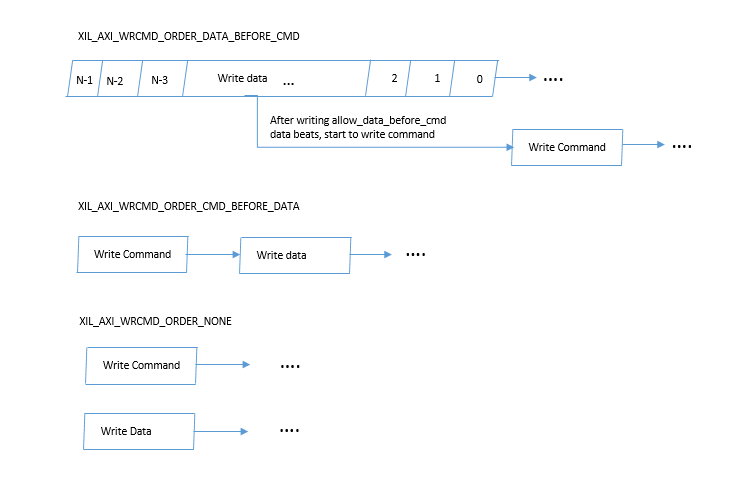

xil_info(TAG, MSG, LEVEL)
Xilinx VIP macro for information which gives informative message when LEVEL is bigger than 300. Else, it is silent.
`define xil_info(TAG, MSG, LEVEL) \
if(LEVEL > 300) \
$display("INFO: [%s] (%m) %0t : %s", TAG, $time, MSG);
xil_warning(TAG, MSG)
Xilinx VIP macro for warning which indicates a potential problem.
`define xil_warning(TAG, MSG) \
$warning("[%s] (%m) %0t : %s", TAG, $time, MSG);
xil_error(TAG, MSG)
Xilinx VIP macro for error which indicates a real problem.Simulation continues subject to the configured message action.
`define xil_error(TAG, MSG) \
$error("[%s] (%m) %0t : %s", TAG, $time, MSG);
xil_fatal(TAG, MSG)
Xilinx VIP macro for Fatal which indicates a problem from which simulation can not recover.simulation exits via $finish after a #0 delay.
`define xil_fatal(TAG, MSG) \
$fatal(1,"[%s] (%m) %0t : %s", TAG, $time, MSG);
AXI_PARAM_ORDER
Macro for AXI VIP's Model parameters order. AXI VIP model parameters are related to user parameters as listed below:
User Parameter Model Parameter
PROTOCOL (AXI4, AXI3, AXI4LITE) C_AXI_PROTOCOL(0,1,2)
C_AXI_ADDR_WIDTH C_AXI_ADDR_WIDTH
DATA_WIDTH C_AXI_WDATA_WIDTH
DATA_WIDTH C_AXI_RDATA_WIDTH
ID_WIDTH C_AXI_WID_WIDTH
ID_WIDTH C_AXI_RID_WIDTH
AWUSER_WIDTH C_AXI_AWUSER_WIDTH
WUSER_WIDTH C_AXI_WUSER_WIDTH
BUSER_WIDTH C_AXI_BUSER_WIDTH
ARUSER_WIDTH C_AXI_ARUSER_WIDTH
RUSER_WIDTH C_AXI_RUSER_WIDTH
SUPPORTS_NARROW C_AXI_SUPPORTS_NARROW
HAS_BURST C_AXI_HAS_BURST
HAS_LOCK C_AXI_HAS_LOCK
HAS_CACHE C_AXI_HAS_CACHE
HAS_REGION C_AXI_HAS_REGION
HAS_PROT C_AXI_HAS_PROT
HAS_QOS C_AXI_HAS_QOS
HAS_WSTRB C_AXI_HAS_WSTRB
HAS_BRESP C_AXI_HAS_BRESP
HAS_RRESP C_AXI_HAS_RRESP
HAS_ARESETN C_AXI_HAS_ARESETN
`define AXI_PARAM_ORDER #(C_AXI_PROTOCOL,C_AXI_ADDR_WIDTH, C_AXI_WDATA_WIDTH, C_AXI_RDATA_WIDTH, C_AXI_WID_WIDTH,C_AXI_RID_WIDTH,
C_AXI_AWUSER_WIDTH, C_AXI_WUSER_WIDTH, C_AXI_BUSER_WIDTH, C_AXI_ARUSER_WIDTH, C_AXI_RUSER_WIDTH,
C_AXI_SUPPORTS_NARROW, C_AXI_HAS_BURST,C_AXI_HAS_LOCK,C_AXI_HAS_CACHE,C_AXI_HAS_REGION,C_AXI_HAS_PROT,
C_AXI_HAS_QOS, C_AXI_HAS_WSTRB, C_AXI_HAS_BRESP,C_AXI_HAS_RRESP,C_AXI_HAS_ARESETN)
xil_uint
Xilinx VIP Interger unsigned data type
typedef integer unsigned xil_uint;
xil_verbosity
Xilinx VIP verbosity data type. When verbosity is bigger than 300, information will be printed out
typedef xil_uint xil_verbosity;
xil_axi_int
Xilinx AXI VIP int data type
typedef integer xil_axi_int;
xil_axi_longint
Xilinx AXI VIP longint data type
typedef longint xil_axi_long;
xil_axi_uint
Xilinx AXI VIP Interger unsigned data type
typedef integer unsigned xil_axi_uint;
xil_axi_ulong
Xilinx AXI VIP longint unsigned data type
typedef longint unsigned xil_axi_ulong;
xil_axi_payload_byte
Xilinx AXI VIP payload byte data type
typedef logic[7:0] xil_axi_payload_byte;
xil_axi_strb_1byte
Xilinx AXI VIP strb 1 byte data type
typedef logic xil_axi_strb_1byte;
xil_axi_user_beat
Xilinx AXI VIP User beat data type
typedef logic [XIL_AXI_USER_BEAT_WIDTH-1:0] xil_axi_user_beat;
xil_axi_data_beat
Xilinx AXI VIP data beat data type
typedef logic [XIL_AXI_MAX_DATA_WIDTH-1:0] xil_axi_data_beat;
xil_axi_strb_beat
Xilinx AXI VIP Strobe beat data type
typedef logic [XIL_AXI_MAX_DATA_WIDTH/8-1:0] xil_axi_strb_beat;
xil_axi_user_element
Xilinx AXI VIP user element data type
typedef integer unsigned xil_axi_user_element;
xil_axi_len_t
Xilinx AXI VIP transaction Length data type
typedef bit [7:0] xil_axi_len_t;
xil_axi_cache_t
Xilinx AXI VIP transaction Cache data type
typedef bit [3:0] xil_axi_cache_t;
xil_axi_prot_t
Xilinx AXI VIP transaction Prot data type
typedef bit [2:0] xil_axi_prot_t;
xil_axi_region_t
Xilinx AXI VIP transaction Region data type
typedef bit [3:0] xil_axi_region_t;
xil_axi_qos_t
Xilinx AXI VIP transaction QOS data type
typedef bit [3:0] xil_axi_qos_t;
xil_axi_memory_fill_policy_t
Policies used by the memory model when it is determining what operation to perform when it encounters an empty entry. It can fill in the memory model with some fixed default value( user has to set this value through set_default_value_memory_value) or randomly generated value.
XIL_AXI_MEMORY_FILL_FIXED - Memory default fill in with fixed value
XIL_AXI_MEMORY_FILL_RANDOM - Memory default fill in with random value
xil_axi_memory_delay_policy_t
Policies used by the memory model te determine how to insert inter-beat gaps.
XIL_AXI_MEMORY_DELAY_FIXED - Use a constant delay for the timing of the responses from the memory model.
XIL_AXI_MEMORY_DELAY_NOADJUST_FIXED - Use a constant delay for the timing of the responses from the memory model, however,
do not adjust the delay based on the previous transaction delays.
XIL_AXI_MEMORY_DELAY_NOADJUST_RANDOM - Use a random delay for the timing of the responses from the memory model, however,
do not adjust the delay based on the previous transaction delays.
XIL_AXI_MEMORY_DELAY_RANDOM - Use a random delay for the timing of the responses from the memory model.
xil_axi_size_t
Definitions of the AXI AxSIZE values in a transaction.
XIL_AXI_SIZE_1BYTE - 3'b000 transfer size is 1 byte
XIL_AXI_SIZE_2BYTE - 3'b001 transfer size is 2 byte
XIL_AXI_SIZE_4BYTE - 3'b010 transfer size is 4 byte
XIL_AXI_SIZE_8BYTE - 3'b011 transfer size is 8 byte
XIL_AXI_SIZE_16BYTE - 3'b100 transfer size is 16 byte
XIL_AXI_SIZE_32BYTE - 3'b101 transfer size is 32 byte
XIL_AXI_SIZE_64BYTE - 3'b110 transfer size is 64 byte
XIL_AXI_SIZE_128BYTE - 3'b111 transfer size is 128 byte
xil_axi_lock_t
Definitions of the AXI AxLOCK values which defines access type of transaction.
XIL_AXI_ALOCK_NOLOCK - 2'b00 Normal Access
XIL_AXI_ALOCK_EXCL - 2'b01 Exclusive Access
XIL_AXI_ALOCK_LOCKED - 2'b10 Locked Access
XIL_AXI_ALOCK_RSVD - 2'b11 Reserved
xil_axi_resp_t
Definitions of the AXI BRESP and RRESP values of transaction.
XIL_AXI_RESP_OKAY - 2'b00 Normal Access
XIL_AXI_RESP_EXOKAY - 2'b01 Exclusive Access
XIL_AXI_RESP_SLVERR - 2'b10 Slave Error
XIL_AXI_RESP_DECERR - 2'b11 Decode Error
xil_axi_burst_t
Definitions of the AXI AxBURST values of transaction.
XIL_AXI_BURST_TYPE_FIXED - 2'b00 Burst type is fixed
XIL_AXI_BURST_TYPE_INCR - 2'b01 Burst type is increment
XIL_AXI_BURST_TYPE_WRAP - 2'b10 Burst type is wrap
XIL_AXI_BURST_TYPE_RSVD - 2'b11 Reserved
xil_axi_cmd_t
Enumeration of the possible transaction direction from the perspective of the master.
XIL_AXI_READ - command type is AXI Read
XIL_AXI_WRITE - command type is AXI Write
xil_axi_driver_return_policy_t
Policies of the transaction to inform the driver whether to return the transaction back to the issuer Depending on the policy the driver will return the transaction a different points in the life of the transaction
XIL_AXI_NO_RETURN - Driver has no return of transaction
XIL_AXI_CMD_RETURN - Driver return when CMD is complete
XIL_AXI_PAYLOAD_RETURN - Driver return When PAYLOAD is complete
XIL_AXI_CMD_PAYLOAD_RETURN - Driver return when both CMD and PAYLOAD are complete
XIL_AXI_CMD_WLAST_RETURN - Driver return when both CMD and WLAST are complete
XIL_AXI_CMD_WLAST_PAYLOAD_RETURN - Driver return when CMD,WLAST and PAYLOAD are complete
XIL_AXI_WLAST_PAYLOAD_RETURN - Driver return when WLAST and PAYLOAD are complete
XIL_AXI_WLAST_RETURN - Driver return when WLAST is complete
xil_axi_reorder_ability_t
This policy type informs the driver if the driver can re-order transactions that it is still processing. For READ transactions, the driver can return the RDATA beats from different RID's in a different order than they were received. For WRITE transactions, the driver uses this policy to determine if it can return BRESP's in a different order than they were received.
XIL_AXI_REORDER_CAPABLE - Reorder is capable
XIL_AXI_NO_REORDER - No reorder
xil_axi_ready_gen_policy_t
Collection of policies that describe how the xREADY signals will behave. These policies can introduce backpressure into the system to find design faults, refer PG267 section about READY Generation for more details.
XIL_AXI_READY_GEN_NO_BACKPRESSURE - Ready stays asserted and will not change. The driver
will still check for policy changes.
XIL_AXI_READY_GEN_SINGLE - Ready stays 0 for low_time clock cycles and then
drives 1 until one ready/valid handshake occurs,
the policy repeats until the channel is given
different policy.
XIL_AXI_READY_GEN_EVENTS - Ready stays 0 for low_time clock cycles and then
drives 1 until event_count ready/valid handshakes
occur,the policy repeats until the channel is given
different policy.
XIL_AXI_READY_GEN_OSC - Ready stays 0 for low_time and then goes to 1 and
stays 1 for high_time,the policy repeats until the
channel is given different policy.
XIL_AXI_READY_GEN_RANDOM - This policy generate random ready policy and uses
min/max pair of low_time, high_time and event_count to
generate low_time, high_time and event_count.
XIL_AXI_READY_GEN_AFTER_VALID_SINGLE - This policy is active when VALID is detected to be
asserted, Ready stays 0 for low_time clock cycles and
then drives 1 until one ready/valid handshake occurs,
the policy repeats until the channel is given
different policy.
XIL_AXI_READY_GEN_AFTER_VALID_EVENTS - This policy is active when VALID is detected to be
asserted, Ready stays 0 for low_time clock cycles and
then drives 1 until event_count ready/valid handshake
occurs,the policy repeats until the channel is given
different policy.
XIL_AXI_READY_GEN_AFTER_VALID_OSC - This policy is active when VALID is detected to be
asserted, Ready stays 0 for low_time and then goes to
1 and stays 1 for high_time,the policy repeats until
the channel is given different policy.
xil_axi_ready_rand_policy_t
Collection of policies that describe how the xREADY signals will behave when xil_axi_ready_gen_policy is XIL_AXI_READY_GEN_RANDOM. refer PG267 section about READY Generation for more details.
XIL_AXI_READY_RAND_SINGLE - Ready stays 0 for low_time clock cycles and then
drives 1 until one ready/valid handshake occurs,
the policy repeats until the channel is given
different policy.
XIL_AXI_READY_RAND_EVENTS - Ready stays 0 for low_time clock cycles and then
drives 1 until event_count ready/valid handshakes
occur,the policy repeats until the channel is given
different policy.
XIL_AXI_READY_RAND_OSC - Ready stays 0 for low_time and then goes to 1 and
stays 1 for high_time,the policy repeats until the
channel is given different policy.
XIL_AXI_READY_RAND_AFTER_VALID_SINGLE - This policy is active when VALID is detected to be
asserted, Ready stays 0 for low_time clock cycles and
then drives 1 until one ready/valid handshake occurs,
the policy repeats until the channel is given
different policy.
XIL_AXI_READY_RAND_AFTER_VALID_EVENTS - This policy is active when VALID is detected to be
asserted, Ready stays 0 for low_time clock cycles and
then drives 1 until event_count ready/valid handshake
occurs,the policy repeats until the channel is given
different policy.
XIL_AXI_READY_RAND_AFTER_VALID_OSC - This policy is active when VALID is detected to be
asserted, Ready stays 0 for low_time and then goes to
1 and stays 1 for high_time,the policy repeats until
the channel is given different policy.
xil_axi_boolean_t
Xilinx AXI VIP Boolean data type
XIL_AXI_TRUE - AXI VIP Boolean TRUE
XIL_AXI_FALSE - AXI VIP Boolean FALSE
xil_axi_vif_dummy_drive_t
When VIF driver is in idle mode, possible signals that can be driven on VIF
XIL_AXI_VIF_DRIVE_NONE - VIF Drive Zero in Dummy mode
XIL_AXI_VIF_DRIVE_X - VIF Drive X in Dummy mode
XIL_AXI_VIF_DRIVE_NOISE - VIF Drive NOISE in Dummy mode
XIL_AXI_VIF_DRIVE_Z - VIF Drive Z in Dummy mode
xil_axi_xfer_alignment_t
Diffferent data pattern of transaction.
Data in the transaction can be sparse or continued valid bytes. XIL_AXI_XFER_SPARSE means the strobe of the transaction is sparsely to be on or off. When it is continued pattern,it has four patterns which are XIL_AXI_XFER_CONT_ALIGNED,XIL_AXI_XFER_CONT_ALIGNED_HEAD,XIL_AXI_XFER_CONT_UNALIGNED,XIL_AXI_XFER_CONT_UNALIGNED_NULL.
When start byte address alignment with its address boundry, it is continued aligned, if not, it is continued unaligned. Below shows how these different alignment type transfer looks like.
... here means data
ALIGNED ALIGNED_HEAD(1) ALIGNED_HEAD(2) UNALIGNED UNALIGNED_NULL(1) UNALIGNED_NULL(2)
x------------x x-----------x x-----------x x-------x x-------x x-------x
| . . . | | . . . | | . . . | | . . | | . . | | . . |
| . . . | | . . . | | . . . | |. . x---x | . . x---x |. . x---x
| . . . | | . . . | | . . . | | . . . | | . . . | | . . . |
| . . . | | . . . | | . . . | | . . . | | . . . | | . . . |
| . . . | | . . . | | . . . | | . . . | | . . . | | . . . |
| . . . | x--x . . | x-----------x | . . . | x---x . . | x-----------x
| . . . | | . . | | | | . . . | | . . | | |
x------------x x--------x x-----------x x-----------x x-------x x-----------x
if the burst just has one transfer.
ALIGNED ALIGNED_HEAD UNALIGNED UNALIGNED_NULL
x--------x x--------x x--------x x--------x
|........| |...| |....| | | |...| |
x--------x x--------x x--------x x--------x
XIL_AXI_XFER_CONT_ALIGNED - Transfer is aligned with the start address of the transaction, all bytes are valid
XIL_AXI_XFER_CONT_ALIGNED_HEAD - Transfer is just aligned with head, all bytes are valid except the tail part
XIL_AXI_XFER_CONT_UNALIGNED - Transfer is not aligned with the start address, all bytes are valid except the head part.
XIL_AXI_XFER_CONT_UNALIGNED_NULL - Transfer is unaligned with the head and tail bytes
XIL_AXI_XFER_SPARSE - Transfer is sparse, randomized valid bytes.
Default transfer alignment is XIL_AXI_XFER_CONT_ALIGNED, if user want to set their own alignment type, they can use set_xfer_alignment to set it.
Note: When AXI VIP's HAS_WSTRB is 0, the transaction can not have an unaligned address.
xil_axi_xfer_wrcmd_order_t
The order between write command and write data
XIL_AXI_WRCMD_ORDER_DATA_BEFORE_CMD - Write Data before Command
XIL_AXI_WRCMD_ORDER_CMD_BEFORE_DATA - Write Command before Data
XIL_AXI_WRCMD_ORDER_NONE - Write has no order, it can be either data before command or command before data

xil_axi_xfer_wrdata_insertion_policy_t
AXI transaction write data insertion delay policy
XIL_AXI_WRCMD_INSERTION_ALWAYS - Always insert data delay after write command when xil_axi_xfer_wrcmd_order
is XIL_AXI_WRCMD_ORDER_CMD_BEFORE_DATA
XIL_AXI_WRCMD_INSERTION_FROM_IDLE - Insert Data delay only when it is from IDLE state
xil_axi_vif_axi_version_t
AXI protocol version type
XIL_VERSION_LITE - The version is AXI4LITE
XIL_VERSION_AXI4 - The version is AXI4
XIL_VERSION_AXI3 - The version is AXI3
xil_axi_data_fill_t
Pattern of filling in data into transacation
XIL_AXI_DATA_FILL_NOTOUCH - Do not modify the data beats of the transaction.
XIL_AXI_DATA_FILL_CONSTANT - Fill each beat of the transaction with the provided constant value.
XIL_AXI_DATA_FILL_RANDOM - Fill each beat of the transaction with random data.
XIL_AXI_DATA_FILL_ADDR_AS_DATA - Fill each beat of the transaction with the current value of the address.
XIL_AXI_DATA_FILL_WALKING_1 - Fill the beats of the transaction with a walking 1 pattern.
XIL_AXI_DATA_FILL_WALKING_0 - Fill the beats of the transaction with a walking 0 pattern.
XIL_AXI_DATA_FILL_HAMMER - Fill the beats of the transaction with an alternating pattern of all 1's and all 0's.
XIL_AXI_DATA_FILL_NEIGHBOUR - Fill the beats with shifting neighbour pattern.
xil_axi_strb_fill_t
Pattern of filling in strobe into transaction
XIL_AXI_STRB_FILL_NOTOUCH - Do not modify the strb values of the transaction.
XIL_AXI_STRB_FILL_RANDOM - Fill each beat of strb in the transaction with random data.
XIL_AXI_STRB_FILL_ALL_VALID - Set all strb values to 1.
XIL_AXI_STRB_FILL_ALT_VALID - Fill each strb value with alternating bit pattern.
XIL_AXI_STRB_FILL_NO_VALID - Set all strb values to 0.
xil_clog2
Returns the base 2 logarithm of input
xil_pow2
Returns the base 2 power of input
aligned_size_mask
Returns inverted value of the base 2 power of size
aligned_4k_mask
Returns inverted value of the base 2 power of 12
convert_dw_to_axi_size
Convert Data width to AXI size value
xil_void
The xil_void class is the base class for all Xilinx Verification Component classes. It is an abstract class with no data memebers or functions.
xil_object
The xil_object class is the base class for all Xilinx Verification Component data and hierarchical classes. Its primary role is to define a set of methods for common operations such as set name, verbosity, tag etc.
new
Constructor to create a new xil_object.~name~ is the name of the instance.
get_name
function string get_name();
Returns the name of xil_object.
get_full_name
function string get_full_name();
Returns the name of xil_object.
get_inst_id
function int get_inst_id();
Returns m_inst_id of xil_object.
set_verbosity
Sets the verbosity of debug information which will be printed in <xil_object>.refer xil_info for verbosity level setting.
get_verbosity
Returns the current value of verbosity of xil_object.
get_tag
virtual function string get_tag();
Gets the name/TAG of the xil_object.
set_is_active
virtual function void set_is_active();
Sets is_active to be 1 and xil_object is in active state.
clr_is_active
virtual function void clr_is_active();
Sets is_active to be 0 and xil_object is in not active state.
get_is_active
virtual function bit get_is_active();
Returns the is_active value of xil_object. A value of 1 is considered active.
wait_enabled
task wait_enabled();
Wait until is_active is high of xil_object.
xil_reporter
The xil_reporter class is a class which extends from xil_object and add its own get_type_name function
new
Constructor to create a new xil_reporter. ~name~ is the name of the instance.
get_type_name
virtual function string get_type_name();
Returns name of xil_reporter.
xil_component
The xil_componennt class is a class which extends from xil_reporter and added its own new and get_type_name function
new
Constructor to create a new xil_component and assign its name to type_name. ~name~ is the name of the instance.
get_type_name
virtual function string get_type_name();
Returns type_name of xil_component.
xil_agent
The xil_agent class is a class which extends from xil_component.
new
Constructor to create a new xil_agent. ~name~ is the name of the instance.
xil_sequence_item
The xil_sequence_item is a class which extends from xil_object.
get_type_name
virtual function string get_type_name();
Returns string of "xil_sequence_item".It is virtual function which will be overwritten later in its extended classes.
convert2string
virtual function string convert2string();
Returns empty string. It is virtual function which will be overwritten later in its extended classes.
xil_analysis_port
The xil_analysis_port is a parameterized class which extends from xil_component
new
Constructor to create a new xil_analysis_port. ~name~ is the name of the instance.
set_enabled
function void set_enabled();
Set enabled value to 1, xil_analysis_port is on.
clr_enabled
function void clr_enabled();
Set enabled to be 0, xil_analysis_port is off.
get_enabled
function logic get_enabled();
Returns enabled value of xil_analysis_port.
get_item_cnt
function integer unsigned get_item_cnt();
Returns item_cnt of xil_analysis_port.
write
When xil_analysis_port is enabled,this function will push input argument into the queue of xil_analysis_port, increment item_cnt.
get
When xil_analysis_port is enabled,this function will get its output from the queue of xil_analysis_port, decrement item_cnt.Else, it will get fatal error message about attempting to get from disabled anaylysis port.
xil_sqr_if_base
xil_sqr_if_base is a base class which provides the interfaces necessary in order to receive or send sequence items and/or other sequences. xil_sqr_if_base #(T1, T2)
get_name
function string get_name();
Return the name of the xil_sqr_if_base .
set_max_item_cnt
Set the number of concurrent connections to the same inbound/output sequence port.
get_max_item_cnt
function integer unsigned get_max_item_cnt();
Return the number of concurrent connections to the same inbound/output sequence port.
get_next_item
Pop out sequence item from item queue of xil_sqr_if_base when item queue is not empty. It is a block task until there is item in the queue.
try_next_item
Pop out sequence item from item queue of xil_sqr_if_base when item queue is not empty,othewise it returns a null object.It is a non-block task
wait_for_item_done
When item_done_cnt of xil_sqr_if_base is not zero, item_done_cnt decrements. it is a block task.
item_done
Give error message about attempting to double pop the item_done queue,and returns 1 while item_inflight_cnt of xil_sqr_if_base is zero. Else it increments item_done_cnt of xil_sqr_if_base and return 0.
put_item
Give error message about FIFO is overfilled when item_cnt is bigger than max_item_cnt of xil_sqr_if_base and returns 1. Else it push the item into item queue, increment item_cnt and returns 0.
get_next_rsp
Pop out response item from resonse item queue of xil_sqr_if_base when response queue is not empty. It is a block task until there is response item in the queue.
try_next_rsp
Pop out response item from item queue of xil_sqr_if_base when response queue is not empty,othewise it returns a null object.It is a non-block task
wait_for_rsp_done
When rsp_done_cnt of xil_sqr_if_base is not zero, rsp_done_cnt decrements. it is a block task.
rsp_done
Give error message about attempting to double pop the rsp_done queue and returns 1 when rsp_inflight_cnt is zero. Else, it will increment rsp_done_cnt, decrement rsp_inflight_cnt and returns 0.
put_rsp
Give error message about response FIFO has overfilled and returns 1 when rsp_cnt is bigger than max_item_cnt. Else, it will put response item into rsp_q of xil_sqr_if_base, increment rsp_cnt and return 0.
xil_seq_item_pull_port
The xil_seq_item_pull_port#(REQ,RSP) class is extends from xil_sqr_if_base. It inherits all these variables and functions of xil_sqr_if_base.
new
Constructor to create a new instance of xil_seq_item_pull_port,~name~ is the name of the instance.
xil_driver
The xil_driver#(REQ, RSP) class is parameterized class which extends from xil_component.It is the base class of all xilinx VIP's driver class. It has one port which is seq_item_port
new
Creates and initializes an instance of this class using the normal constructor arguments for xil_component, ~name~ is the name of the instance, create an instance of seq_item_port.
get_type_name
virtual function string get_type_name ();
Returns type_name of xil_driver.
xil_monitor
The xil_monitor extends from xil_component, It is the base class of all xilinx VIP's monitor class
new
Constructor to create a new <xil_monitor>.~name~ is the name of the instance.
xil_axi_channel_beat_base
XIL AXI Channel Beat Base class, single bus beat for the Write Channel. It inherits all the methods of xil_sequence_item
new
Constructor to create a new xil_axi_channel_beat_base. ~name~ is the name of the instance.
get_accepted_time
virtual function time get_accepted_time();
xil_axi_data_channel_beat_base
XIL AXI data channel beat base object, it inherits all the methods and member from xil_axi_channel_beat_base
xil_axi_write_beat
XIL AXI write beat class, it inherits all the methods and members of xil_axi_data_channel_beat_base
new
Constructor to create a new xil_axi_write_beat. ~name~ is the name of the instance.
convert2string
virtual function string convert2string();
Returns string with last,data,size and user info of the xil_axi_write_beat.
trigger_data_beat_accepted
Sets write beat characterics of data_beat_accepted,data_ready_assert_time, data_valid_assert_time,data_ready_assert_cycle,data_valid_assert_cycle,data_beat_accepted_cycles,
xil_axi_resp_beat
XIL AXI RESP beat class. Single bus beat for the RESP channel. It inherits all the member and methods of xil_axidata_channel_beat_base.
new
Constructor to create a new xil_axi_resp_beat. ~name~ is the name of the instance.
xil_axi_read_beat
XIL AXI read beat class. Single bus beat for the READ channel. It inherits all the member and methods of xil_axi_resp_beat.
new
Constructor to create a new xil_axi_read_beat. ~name~ is the name of the instance.
convert2string
virtual function string convert2string();
Returns string with last,data,size and user information of xil_axi_read_beat.
xil_axi_cmd_beat
XIL AXI cmd beat class. Single bus beat for the CMD channel, it inherits all the member and methods of xil_axi_channel_beat_base. It includes read/write, addr, id, burst, len, size, lock, cache, prot,region,qos,user
new
Constructor to create a new xil_axi_cmd_beat. ~name~ is the name of the instance.
convert2string
virtual function string convert2string();
Returns string with direction name,addr,id,len,size and user information of the xil_axi_cmd_beat.
axi_transaction
The axi_transaction class is the base class of AXI protocol. It inherits all the methods of xil_sequence_item.
new
Constructor to create a new axi_transaction. ~name~ is the name of the instance.
copy
Copies the contents of the input transaction to the current transaction
get_type_name
virtual function string get_type_name();
Returns the name of <the axi_transaction>. AXI_TRANSACTION
my_clone
Copys the current transaction and returns a handle to the new transaction.
set_protocol
Sets the protocol type of the transaction. update = 0 => protocol = XIL_VERSION_AXI4; update = 1 => protocol = XIL_VERSION_AXI3; update = 2 => protocol = XIL_VERSION_LITE;
get_adjust_response_delay_enabled
Returns the current state of adjust_response_delay_enabled of the transaction.
set_adjust_response_delay_enabled
Sets the value of adjust_response_delay_enabled of the transaction.
get_adjust_addr_delay_enabled
Returns the current state of adjust_addr_delay_enabled of the transaction.
set_adjust_addr_delay_enabled
Sets the value of adjust_addr_delay_enabled of the transaction.
get_adjust_data_beat_delay_enabled
Returns the current state of adjust_data_beat_delay_enabled of the transaction.
set_adjust_data_beat_delay_enabled
Sets the value of adjust_data_beat_delay_enabled of the transaction.
set_supports_narrow
Sets the value of supports_narrow of the transaction. Internal use only
set_has_burst
Sets the value of has_burst of the transaction. Internal use only
set_has_lock
Sets the value of has_lock of the transaction. Internal use only
set_has_cache
Sets the value of has_cache of the transaction.Internal use only
set_has_region
Sets the value of has_region of the transaction.Internal use only
set_has_prot
Sets the value of has_prot of the transaction.Internal use only
set_has_qos
Sets the value of has_qos of the transaction. Internal use only
set_has_wstrb
Sets the value of has_wstrb of the transaction. Internal use only
set_has_bresp
Sets the value of has_bresp of the transaction. Internal use only
set_has_rresp
Sets the value of has_rresp of the transaction. Internal use only
get_supports_narrow
Returns the value of supports_narrow of the transaction.
get_has_burst
Returns the value of has_burst of the transaction.
get_has_lock
Returns the value of has_lock of the transaction.
get_has_cache
Returns the value of has_cache of the transaction.
get_has_region
Returns the value of has_region of the transaction.
get_has_prot
Returns the value of has_prot of the transaction.
get_has_qos
Returns the value of has_qos of the transaction.
get_has_wstrb
Returns the value of has_wstrb of the transaction.
get_has_bresp
Returns the value of has_bresp of the transaction.
get_has_rresp
Returns the value of has_rresp of the transaction.
get_protocol
Returns the value of protocol type of the transaction.
set_addr_width
Sets the value of address width of the transaction. Internal use only
get_addr_width
Returns the value of address width of the transaction.
set_data_width
Sets the value of WDATA/RDATA width of the transaction. Internal use only
get_data_width
Returns the value of WDATA/RDATA width of the transaction.
set_id_width
Sets the value of ID width of the transaction. Internal use only
get_id_width
Returns the value of ID width of the transaction.
set_awuser_width
Sets the value of AWUSER width of the transaction.Internal use only
get_awuser_width
Returns the value of AWUSER width of the transaction.
set_wuser_width
Sets the value of WUSER width of the transaction. Internal use only
get_wuser_width
Returns the value of WUSER width of the transaction.
set_buser_width
Sets the value of BUSER width of the transaction.Internal use only
get_buser_width
Returns the value of BISER width of the transaction.
set_aruser_width
Sets the value of ARUSER width of the transaction. Internal use only
get_aruser_width
Returns the value of ARUSER width of the transaction.
set_ruser_width
Sets the value of RUSER width of the transaction. Internal use only
get_ruser_width
Returns the value of RUSER width of the transaction.
get_axi_version
Returns the value of AXI version of the transaction. please refer xil_axi_vif_axi_version_t for possible axi version
set_axi_version
Sets the value of AXI VERSION of the transaction. Internal use only
get_axi_version_name
virtual function string get_axi_version_name();
Returns the enum string name of the AXI version of the transaction.please refer xil_axi_vif_axi_version_t for possible axi version name.
set_creation_time
Sets creation_time of the transaction. It is the time when the transaction is being created.
get_creation_time
virtual function time get_creation_time();
Returns creation_time of the transaction.
cmd_convert2string
virtual function string cmd_convert2string();
Returns the string of the AXI basic command properties which are cmd name,cmd_id,addr,id,length,size name, burst name, cache,lock name and prot. This is debugging tool to observe the transaction.
cmd_sprintf
virtual function string cmd_sprintf();
Returns the string of cmd_convert2string. refer cmd_convert2string for AXI basic command properties. This is debugging tool to observe the transaction.
convert2string
virtual function string convert2string();
Returns the string with the properties of the AXI transaction. This is debugging tool to observe the transaction.
Name
CMD
ADDR
W/RID
LEN
SIZE
BURST
CACHE
LOCK
PROT
REGION
QOS
AWUSER/BUSER/BRESP/ARUSER
DRIVER_RETURN_ITEM
CREATION_TIME
SUBMIT_TIME
PAYLOAD
set_submit_time
Sets the sumbit_time of the transaction. to be removed
get_submit_time
virtual function time get_submit_time();
Gets the submit_time of the transaction. to be removed
set_submit_cycle
Sets the sumbit_cycle of the transaction.
get_submit_cycle
Gets the submit_cycle of the transaction.
get_region_range
Returns the MIN/MAX values that are used to constrain the AxREGION value.
set_region_range
Sets the MIN/MAX values that are used to constrain the AxREGION value. Internal use only
get_num_bytes_in_transaction
Returns the number of bytes of DATA in the transaction based on the current properties of the transaction. It equals to (length +1) * size(in bytes)
set_read_cmd
Helper function to set the most common READ command properties of the transaction. Address,burst type,length, and size can be set through this command.This API is being used for READ Command only.
set_write_cmd
Helper function to set the most common WRITE command properties of the transaction. It sets address, burst type, id, length and size of the WRITE transaction. This API can only be used for WRITE Command only.
set_cmd
Helper function to set the most common command properties of the transaction. It sets cmd type,address, burst type, id, length and size of the transaction,
get_region
Returns the value of AxREGION of the transaction.
set_region
Sets the value of AxREGION of the transaction.
get_qos
Returns the value of AxQOS of the transaction.
set_qos
Sets the value of AxQOS of the transaction.
get_id
Returns the value of AxID/RID/BID of the transaction.
set_id
Sets the value of AxID/RID/BID of the transaction.
set_driver_return_item
virtual function void set_driver_return_item ();
Sets the driver_return_item property to XIL_AXI_PAYLOAD_RETURN of the transaction.
set_driver_return_item_policy
Sets the driver_return_item property of the transaction. If user want to get the data back from driver, the driver_return_item has to be set to not XIL_AXI_NO_RETURN.
Simple usage of this API to get read data back from driver from master agent is listed below, more details please refer PG267 section about How to Receive Read Data and/or example design in Vivado about sim-set sim_adv_mst_active__pt_slv__slv_passive, under there look for *mst_stimulus.sv file :
rd_trans = agent.rd_driver.create_transaction("read transaction with randomization for getting data back");
fully_randomized_transaction(rd_trans);
rd_trans.set_driver_return_item_policy(XIL_AXI_PAYLOAD_RETURN);
agent.rd_driver.send(rd_trans);
agent.rd_driver.wait_rsp(rd_trans);
data_block_for_read = rd_trans.get_data_block();
$display("Read data from Driver: Block Data %h ", data_block_for_read);
DataBeat_for_read = new[rd_trans.get_len()+1];
for( xil_axi_uint beat=0; beat<rd_trans.get_len()+1; beat++) begin
DataBeat_for_read[beat] = rd_trans.get_data_beat(beat);
$display("Read data from Driver: beat index %d, Data beat %h ", beat, DataBeat_for_read[beat]);
get_driver_return_item_policy
Returns the value of driver_return_item property of the transaction.
get_addr
Returns the value of AxADDR of the transaction. AxADDR here can be AWADDR or ARADDR
set_addr
Sets the value of AxADDR of the transaction. AxADDR here can be AWADDR or ARADDR .If user accidently set the address out of range(0, 1<< this.get_addr_width() -1), a warning message will pop up and the address will be truncated to make sure it is in the address range.
get_addr_offset
Gets address offset of the transaction. to be removed
get_cmd_id
Returns the value of an ID field for the transaction. This can be used for tracking the transaction within the DRIVER or environment.
get_cmd_type
Returns the command type (READ/WRITE) of the transaction.
set_cmd_type
Sets the command type (READ/WRITE) of the transaction.
get_cmd_type_name
virtual function string get_cmd_type_name();
Returns the string name of the command type of the transaction.
get_len
Returns the value of AxLEN of the transaction. AxLEN can be ARLEN and AWLEN.
set_len
Sets the value of AxLEN of the transaction,AxLEN can be ARLEN and AWLEN, A fatal DRC occurs when any of the following conditions occur:
If AXI VIP is configured to be AXI4LITE and the user sets the length other than 0
If AXI VIP is configured to be AXI3 and the user sets the length greater than 16
If the burst type is not INCR and the user sets the length to a value great than 16.
If the burst type is fixed and the user sets the length to a value great than 16.
If the burst type is WRAP and the user sets the length to a value that is not 2,4,8,16
get_size
Returns the value of AxSIZE of the transaction, AxSIZE can be ARSIZE and AWSIZE.
get_size_name
virtual function string get_size_name();
Returns the string name of the value of AxSIZE of the transaction,AxSIZE can be ARSIZE and AWSIZE.
get_dw_size
Helper function that will convert the data width value to AxSIZE and return the value,AxSIZE can be ARSIZE and AWSIZE.
set_size
Sets the value of AxSIZE of the transaction,AxSIZE can be ARSIZE and AWSIZE.
get_burst
Returns the value of AxBURST of the transaction, AxBURST can be ARBURST and AWBURST.
get_burst_name
virtual function string get_burst_name();
Returns the string name of the value of AxBURST of the transaction,AxBURST can be ARBURST and AWBURST.
set_burst
Sets the value of AxBURST of the transaction,AxBURST can be ARBURST and AWBURST. When AXI VIP HAS_BURST is low, burst type can only be set to INCR, otherwise, FATAL DRC will be file. When AXI VIP HAS_BURST is high and it is AXI4LITE, burst type can only be set to INCR. otherwise, FATAL DRC will be file
get_lock
Returns the value of AxLOCK of the transaction,AxLOCK can be ARLOCK and AWLOCK.
set_lock
Sets the value of AxLOCK of the transaction,AxLOCK can be ARLOCK and AWLOCK.
get_cache
Returns the value of AxCACHE of the transaction,AxCACHE can be ARCACHE and AWCACHE.
set_cache
Sets the value of AxCACHE of the transaction,AxCACHE can be ARCACHE and AWCACHE.
get_prot
Returns the value of AxPROT of the transaction,AxPROT can be ARPROT and AWPROT.
set_prot
Sets the value of AxPROT of the transaction,AxPROT can be ARPROT and AWPROT.
set_trans_state
Sets trans_state of the transaction.
get_trans_state
virtual function xil_axi_trans_state_t get_trans_state();
Returns trans_state of the transaction.
get_awuser
Returns the value of AWUSER of axi_transaction.
set_awuser
Sets the value of the AWUSER of axi_transaction.Warning will be poped out if user try to set awuser value which is out of range
get_aruser
Returns the value of the ARUSER of axi_transaction.
set_aruser
Sets the value of the ARUSER of axi_transaction. Warning will be poped out if user try to set aruser value which is out of range
get_buser
Returns the value of the BUSER of axi_transaction.
set_buser
Sets the value of the BUSER of the transaction.Warning will be poped out if user try to set buser value which is out of range
get_beat_index
Get current beat index of the axi_transaction.
increment_beat_index
virtual function void increment_beat_index();
Increment beat index of axi_transaction.
clr_beat_index
virtual function void clr_beat_index();
Clear beat index of axi_transaction.
get_addr_delay
Returns the value of the address delay from the time command being recevied by write/read driver of master agent to the time the command being put on interface bus.-Refer PG267 AXI VIP Agent and Flow Methology about Write Command and Data Flow
set_addr_delay
Sets the value of the address delay from the time command being recevied by write/read driver of master agent to the time the command being put on interface bus. --Refer PG267 AXI VIP Agent and Flow Methology about Write Command and Data Flow
adjust_data_insertion_delay
Adjust data insertion delay of the transaction. This API is disabled when adjust_data_beat_delay_enabled is low, when it is high, it will be used to adjust the delay between the time when the command is to be processed and the time when the data is applied to the interface.
adjust_addr_delay
Adjust address delay of the transaction. This API is disabled when adjust_addr_delay_enabled is low, when it is high, it will be used to adjust the address delay of the transaction.
adjust_response_delay
Adjust the response delay of the transaction. This API is disabled when adjust_response_delay_enabled is low, when it is high, it will be used to adjust the response delay.
get_data_insertion_delay
Returns the transactions insertion delay value. The delay value is the number of clock cycles between transfer being processed to the data transfer being applied to the interface.--Refer PG267 AXI VIP Agent and Flow Methology about Write Command and Data Flow.
set_data_insertion_delay
Sets the transactions data insertion delay value, it is number of cycles. This is the delay from the time the transfer is processed to the time the transfer is applied to the interface.--Refer PG267 AXI VIP Agent and Flow Methology about Write Command and Data Flow.
get_response_delay
Returns the number of cycles that the driver will wait before sending the response.Refer PG267 AXI VIP Agent and Flow Methology about Write Response/Reaction and Data Flow.
set_response_delay
Sets the number of cycles that the driver will wait before sending the response.
get_allow_data_before_cmd
Returns allow_data_before_cmd of the transaction. allow_data_before_cmd is the number of data beat in one transfer which is being written to interface data bus before command is being written.If it is zero, it means that command is being written before data.
set_allow_data_before_cmd
Sets allow_data_before_cmd of the transaction.allow_data_before_cmd is the number of data beat in one transfer which is being written to interface data bus before command is being written.If it is zero, it means that command is being written before data.
The default xfer_wrcmd_order of the transaction is XIL_AXI_WRCMD_ORDER_NONE. When this API is being called, user has to make sure that xfer_wrcmd_order of the transaction has to be set to XIL_AXI_WRCMD_ORDER_DATA_BEFORE_CMD so that this API is doing what user expected. user can user set_xfer_wrcmd_order to set the xfer_wrcmd_order of the transaction.
get_xfer_preemptive_probability
Gets xfer_preemptive_probability of the transaction.
set_xfer_preemptive_probability
Sets xfer_preemptive_probability of the transaction.

get_bresp
Returns the value of BRESP of the transaction.
set_bresp
Sets the value of BRESP of the transaction.
get_bresp_name
virtual function string get_bresp_name();
Gets bresp name of the transaction.
is_bresp_okay
Returns 1 if bresp of axi_transaction is XIL_AXI_RESP_OKAY, else returns 0
is_bresp_slverr
Returns 1 if bresp of axi_transaction is XIL_AXI_RESP_SLVERR, else returns 0
is_bresp_decerr
Returns 1 if bresp of axi_transaction is XIL_AXI_RESP_DECERR, else returns 0
is_bresp_exokay
Returns 1 if bresp of axi_transaction is XIL_AXI_RESP_EXOKAY, else returns 0
all_rresp_okay
Returns 1 if rresp of axi_transaction is XIL_AXI_RESP_OKAY, else returns 0
all_rresp_exokay
Returns 1 if rresp of axi_transaction is XIL_AXI_RESP_EXOKAY, else returns 0
all_rresp_slverr
Returns 1 if rresp of axi_transaction is XIL_AXI_RESP_SLVERR, else returns 0
all_rresp_decerr
Returns 1 if rresp of axi_transaction is XIL_AXI_RESP_DECERR, else returns 0
get_beat_index_delay
Returns the current beat delay of the transaction.
set_beat_index_delay
Sets the specified beat delay of the transaction.
set_strb_beat_unpacked
Sets the strobe of one beat of the transaction.
set_data_beat_unpacked
Sets the data of one beat in the transaction.
get_data_beat_unpacked
Returns the data of one beat in the transaction.
set_all_resp_okay
virtual function void set_all_resp_okay();
Sets all_resp_okay of the transaction to be true
get_all_resp_okay
Returns all_resp_okay of the transaction.
clr_all_resp_okay
virtual function void clr_all_resp_okay();
Sets all_resp_okay of the transaction.
set_exclude_resp_exokay
virtual function void set_exclude_resp_exokay();
Sets exclude_resp_exokay of the transaction to be true
get_exclude_resp_exokay
Returns exclude_resp_exokay of the transaction.
clr_exclude_resp_exokay
virtual function void clr_exclude_resp_exokay();
Sets exclude_resp_exokay of the transaction to be false
get_xfer_alignment
Returns xfer_alignment of the transaction.
set_xfer_wrcmd_order
Sets xfer_wrcmd_order of the transaction.
get_xfer_wrcmd_order
Gets xfer_wrcmd_order of the transaction.
set_xfer_wrdata_insertion_policy
Sets xfer_wrdata_insertion_policy of the transaction.
get_xfer_wrdata_insertion_policy
Gets xfer_wrdata_insertion_policy of the transaction.
get_addr_delay_range
Returns min_addr_delay and max_addr_delay of the transaction.
set_addr_delay_range
Sets min_addr_delay and max_addr_delay of the transaction.when transaction is randomized,addr_insertion_delay will be inside the range of min_addr_insertion_delay and max_addr_insertion_delay.
get_data_insertion_delay_range
Returns min_data_insertion_delay and max_data_insertion_delay of the transaction.
get_response_delay_range
Returns min_response_delay and max_response_delay of the transaction.
set_data_insertion_delay_range
Sets min_data_insertion_delay and max_data_insertion_delay of the transaction.when transaction is randomized,data_insertion_delay will be inside the range of min_data_insertion_delay and max_data_insertion_delay.
set_response_delay_range
Sets min_response_delay and max_response_delay of the transaction.when transaction is randomized,response_delay will be inside the range of min_response_delay and max_response_delay.
get_allow_data_before_cmd_range
Returns min_allow_data_before_cmd and max_allow_data_before_cmd of the transaction.
set_allow_data_before_cmd_range
Sets min_allow_data_before_cmd and max_allow_data_before_cmd of the transaction.when transaction is randomized, allow_data_before_cmd will be inside the range of min_allow_data_before_cmd and max_allow_data_before_cmd.
get_beat_delay_range
Returns min_beat_delay and max_beat_delay of the transaction.
set_beat_delay_range
Sets min_beat_delay and max_beat_delay of the transaction. when transaction is randomized,beat_delay will be inside the range of min_beat_delay and max_beat_delay.
get_report_errors_number
Returns report_errors_number of the transaction.
set_report_errors_number
Sets report_errors_number of the transaction. report_errors_number is being used to decide maximum number of miscomparsion error messages about data beat,rresp,ruser,wuser will be printed out when API do_compare is being called.
get_burst_byte_offset
Returns burst byte offset of beat(index) of the transaction. It is being used to calculate burst byte offset.
get_transfer_byte_count
Returns total number of bytes of one transfer. It equals to transfer.size * (transfer.len+1)
clr_strb_array
virtual function void clr_strb_array();
Sets all strobe bits of the transaction to 0
set_strb_array
virtual function void set_strb_array();
Sets all strobe bits of the transaction to 1
clr_data_array
virtual function void clr_data_array();
Sets data to unknown and strobe to be unknown for write transaction
size_wr_beats
virtual function void size_wr_beats();
Sets data,strobe and wuser(if WUSER_WIDTH>0),beat_delay of write transaction
size_rd_beats
virtual function void size_rd_beats();
Sets data,rresp and ruser(if RUSER_WIDTH>0),beat_delay of read transaction
adjust_head_strb
function void adjust_head_strb();
Adjust strobe bit of unaligned head of the transaction to be 0
post_randomize
function void post_randomize();
Sets final value of region,prot,qos,cache,address,bresp,rresp,strobe of transaction to be removed
set_beat_delay
Assign the inter-beat delay of the specified beat.
get_beat_delay
Returns the inter-beat delay of the specified beat.
set_data_beat
Convenience function that will assign the value of the specified beat. it will set the assigned index data and strobe information, default strb is {128{1'b1}} .
set_data_block
Convenience function that will assign the data payload for the complete transaction. The maximum of one transactin is 4k Bytes and that is why the input of this API is 8*4096 bits. According to the transaction length and size, this API will just take what is needed to fill the data of the transaction.
set_strb_beat
Convenience function that will assign the value STRB of the specified beat, default strb is {128{1'b1}}.
get_data_beat
Returns the value of the specified beat. This is NOT always the RDATA/WDATA representation. It will align the signification bytes to the lower bytes and set the unused bytes to zeros.
get_data_block
virtual function bit [8*4096-1:0] get_data_block();
Returns the 4K bytes of the payload for the transaction. This is NOT always the RDATA/WDATA representation. It will align the signification bytes to the lower bytes and set the unused bytes to zeros.
get_strb_beat
Returns the value of the specified beat. This is NOT always the WSTRB representation. It will align the signification strobes to the lower bytes and set the unused strobes to zeros.
set_user_beat
Sets user value of the specified beat.
set_ruser
Sets the value of the RUSER for the specified beat.
set_wuser
Sets the value of the WUSER for the specified beat.
set_rresp
Sets the value of the RRESP for the specified beat.
get_rresp
Returns the value of the RRESP for the specified beat.
get_rresp_name
Returns the name of the RRESP for the specified beat.
get_user_beat
Returns the value of the xUSER beat at the index provided of the transaction. xUSER here can be WUSER/RUSER.
get_wuser
Returns the value of the WUSER for the specified beat.
get_ruser
Returns the value of the RUSER for the specified beat.
convert_addr_wrap_to_incr
Returns the INCR address of the WRAP transaction. The returned INCR address will be aligned to the AxSIZE of the transaction.
convert_wrap_to_incr
Returns an axi_transaction with INCR burst type based on the current transaction which has WRAP burst type. This function will change the resultant INCR transaction address to be aligned.
convert_incr_to_wrap
Returns an axi_transaction with WRAP burst type based on the current transaction which has INCR burst type. This function requires the WRAP offset to correctly return the target word.
import_data_beat_fields
Sets data,strobe,wuser of write beat to be removed
import_cmd_fields
Sets addr, cmd, len,size,burst,lock,cache,prot,region,qos,data and beat_delay of current axi_transaction with xil_axi_cmd_beat cmd contents. For write command, set awuser(if AWUSER_WIDTH>0),wuser(if WUSER_WIDTH>0), For read command, set aruser(if ARUSER_WIDTH>0),ruser(if RUSER_WIDTH>0).
auto_fill_transaction
Fill the transaction with different patterns based on the data_pat/strb_pat selected. When the data_pat is NOT set to XIL_AXI_DATA_FILL_NOTOUCH, The values of the strb's will all be set even if the strb_pat is set to XIL_AXI_DATA_FILL_NOTOUCH. refer xil_axi_data_fill_t, xil_axi_strb_fill_t for more information.
axi_monitor_transaction
AXI Monitor Transaction class. It is an extension of axi_transaction with more APIs added for monitor purpose.
get_addr_phase_start
Returns addr_phase_start of the axi monitor transaction
set_monitor_print_times
virtual function void set_monitor_print_times();
Sets monitor_print_times to be TRUE of axi monitor transaction
clr_monitor_print_times
virtual function void clr_monitor_print_times();
Sets monitor_print_times to be FALSE of axi monitor transaction
trigger_addr_phase_end
Sets addr_phase_end,addr_phase_end_cycle,addr_ready_assert_time,addr_valid_assert_time,addr_ready_assert_cycle, addr_valid_assert_cycle,addr_phase_start,addr_accepted_cycles of axi monitor transaction.
get_addr_phase_end
virtual function time get_addr_phase_end();
Returns addr_phase_end of the axi_monitor_transaction
trigger_data_phase_start
virtual function void trigger_data_phase_start();
Sets data_phase_start of the axi_monitor_transaction to be current time
get_data_phase_start
virtual function time get_data_phase_start();
Returns data_phase_start of the axi_monitor_transaction
get_data_phase_end
virtual function time get_data_phase_end();
Returns data_phase_end of the axi_monitor_transaction
get_bresp_phase_start
virtual function time get_bresp_phase_start();
Returns bresp_phase_start of the axi_monitor_transaction
trigger_bresp_phase_end
Sets bresp_phase_end,resp_ready_assert_time,resp_valid_assert_time,resp_ready_assert_cycle, resp_ready_assert_cycle,resp_valid_assert_cycle,bresp_phase_start,resp_accepted_cycles, bresp_phase_start,resp_accepted_cycles of axi monitor transaction.
get_bresp_phase_end
virtual function time get_bresp_phase_end();
Returns bresp_phase_end of the axi_monitor_transaction
trigger_transaction_phase_start
virtual function void trigger_transaction_phase_start();
Sets transaction_phase_start of the axi_monitor_transaction to current time
get_transaction_phase_start
virtual function time get_transaction_phase_start();
Returns transaction_phase_start of the axi_monitor_transaction
get_transaction_phase_end
virtual function time get_transaction_phase_end();
Returns transaction_phase_end of the axi_monitor_transaction
set_data_beat_time_fields
Sets data_ready_assert_time,data_valid_assert_time,data_beat_accepted,data_beat_accepted_cycles of axi monitor transaction.
import_data_beat_fields
Sets transaction_phase_start,data_phase_end,data_ready_assert_time, data_valid_assert_time,data_beat_accepted,data_beat_accepted_cycles, data, stobe, wuser(if WUSER_WIDTH>0)
trigger_data_beat_accepted
Sets data beat monitor characterics of data_beat_accepted,data_ready_assert_time, data_valid_assert_time,data_ready_assert_cycle,data_valid_assert_cycle,data_beat_accepted_cycles, data_beat_accepted of axi monitor transaction.
get_data_beat_accepted
Returns data_beat_accepted of current beat in axi monitor transaction.
get_data_ready_assert_time
Returns data_ready_assert_time of current beat of axi monitor transaction.
get_data_valid_assert_time
Returns data_valid_assert_time of current beat of axi monitor transaction.
copy
Copies the contents of the input monitor transaction to the current monitor transaction
my_clone
Clones the current monitor transaction and returns a handle to the new monitor transaction.
convert2string
virtual function string convert2string();
Returns a format string for AXI monitor transaction of axi_monitor_transaction
axi_scoreboard_transaction
AXI Scoreboard Transaction class.
axi_ready_gen
AXI Ready generation class.
Ready signals of write command channel, write data channel, write response channel , read command channel and read data channel are generated independently from other attributes.
This class is being used to generate all kinds of different patterns of ready signal which user wants. Please refer section READY Generation of PG267 for more details about how to generate ready.
new
Constructor to create a new axi_ready_gen, ~name~ is the name of the instance.
reset_to_defaults
virtual function void reset_to_defaults();
Reset all variables in ready generation to default value. please refer xil_axi_ready_gen_policy_t , xil_axi_ready_rand_policy_t for more details about ready generation policy.
max_low_time = 5;
min_low_time = 0;
max_high_time = 5;
min_high_time = 0;
max_event_count = 1;
min_event_count = 1;
event_cycle_count_reset = 2000;
ready_policy = XIL_AXI_READY_GEN_SINGLE;
ready_rand_policy = XIL_AXI_READY_RAND_SINGLE;
event_count = 1;
high_time = 5;
low_time = 2;
rand_event_count = 1;
rand_high_time = 5;
rand_low_time = 1;
use_variable_ranges = XIL_AXI_FALSE;
copy
Copies the contents of the input ready generation to the current ready generation
my_clone
Copy the current ready generation and returns a handle to the new generation
convert2string
virtual function string convert2string();
Returns a format of string with below Ready information.
Policy
Random Policy
Use Variable Ranges
Max Low Time
Min Low Time
Max High Time
Min High Time
Max Event Count
Min Event Count
Event Cycle Count Reset
Low Time
High Time
Event Count
set_use_variable_ranges
virtual function void set_use_variable_ranges();
Sets use_variable_ranges to be TRUE. This is to set that get_low_time, get_high_time, get_event_count are randomly generated between the range of minimum and maximum value
clr_use_variable_ranges
virtual function void clr_use_variable_ranges();
Sets use_variable_ranges to be FALSE.This is to set that get_low_time, get_high_time, get_event_count are returned with current low_time, high_time, event_count if ready_policy is not RANDOM
get_use_variable_ranges
Returns the current value of use_variable_ranges.
set_ready_policy
Sets the policy of axi_ready_gen. refer xil_axi_ready_gen_policy_t for policy. if policy is XIL_AXI_READY_GEN_NO_BACKPRESSURE, Then it returns
set_low_time(0)
set_low_time_range(0,0);
set_high_time(1);
set_high_time_range(1,1)
clr_use_variable_ranges()
set_event_cycle_count_reset
Sets event_cycle_count_reset value of axi_ready_gen.
get_event_cycle_count_reset
Returns the current event_cycle_count_reset of axi_ready_gen. In ready generation,event_cycle_count_reset is used to reset event_counter(count number of ready/valid handshake) to zero.
get_low_time_range
Returns min_low_time and max_low_time of axi_ready_gen. low_time is how many cycles ready stay low.
set_low_time_range
Sets min_low_time and max_low_time of <axi_ready_gen>.low_time is how many cycles ready stay low.
get_low_time
Returns low time of the current ready generation. if ready policy is XIL_AXI_READY_GEN_NO_BACKPRESSURE, low time is 0, else if ready policy is XIL_AXI_READY_GEN_RANDOM or get_use_variable_ranges is TRUE, low is the randomly generated low time. else low time is low_time of current ready generation.
low_time is how many cycles ready stay low.
set_low_time
Sets the low time of axi_ready_gen. low_time is how many cycles ready stay low.
get_high_time_range
Returns min_high_time and max_high_time of axi_ready_gen. high_time is how many cycles ready stay high.
set_high_time_range
Sets min_high_time and max_high_time of axi_ready_gen. high_time is how many cycles ready stay high.
get_high_time
Returns high time of axi_ready_gen. If ready policy is XIL_AXI_READY_GEN_NO_BACKPRESSURE, returns 1, else if ready policy is XIL_AXI_READY_GEN_RANDOM or get_use_variable_ranges is TRUE, high time is the randomly generated high time. else high time is high_time of current ready generation.High_time is how many cycles ready stay high.
set_high_time
Sets the high time of axi_ready_gen. High_time is how many cycles ready stay high.
get_event_count_range
Returns min_event_count and max_event_count of axi_ready_gen. event count is used when policy is XIL_AXI_READY_RAND_AFTER_VALID_EVENTS. refer xil_axi_ready_gen_policy_t about how event_count works
set_event_count_range
Sets min_event_count and max_event_count of axi_ready_gen. event count is used when policy is XIL_AXI_READY_RAND_AFTER_VALID_EVENTS. refer xil_axi_ready_gen_policy_t about how event_count works.
set_event_count
Sets the number of events that ready stays at high. event count is used when policy is XIL_AXI_READY_RAND_AFTER_VALID_EVENTS. refer xil_axi_ready_gen_policy_t about how event_count works.
axi_vif_mem_proxy
AXI VIF Proxy Class. It has virtual interface for AXI VIP interface.
Drivers of AXI VIP drive transaction/ready onto AXI VIP bus interface through APIs(such as put_w/rdata) of this class,
monitor of AXI VIP collects AXI interface information and convert it into transaction through APIs(get_w/rdata) in this class.
wait_aclks
Waits specified amount of posedge of aclk
wait_posedge_aclk
virtual task wait_posedge_aclk();
Waits posedge of ACLK of m_vif
wait_posedge_aclk_with_hold
virtual task wait_posedge_aclk_with_hold();
Waits posedge of ACLK of m_vif occurs,then wait hold_time
wait_negedge_aclk
virtual task wait_negedge_aclk();
Waits negedge of ACLK of m_vif
wait_areset_deassert
virtual task wait_areset_deassert();
Waits areset to be deasserted
is_aclk_high
Returns TRUE if the aclk is in the HIGH phase of the cycle.
is_aclk_low
Returns TRUE if the aclk is in the LOW phase of the cycle.
get_drive_x
Returns TRUE if dummy_drive_type is XIL_AXI_VIF_DRIVE_X, else returns FALSE
new
Constructor to create a new axi vif proxy and set protocol version, ~name~ is the instance name.
get_axi_version_name
virtual function string get_axi_version_name();
Returns axi_version's name. refer xil_axi_vif_axi_version_t for axi_version information.
run_phase
task run_phase();
Start control processes for operation of axi_vif_mem_proxy.
get_current_clk_count
Returns clk_edge_counter of axi_vif_mem_proxy. Increment the clock edge counter on clock negedges, to avoid race conditions with synchronous tasks, that could otherwise execute either before or after thie clock edge counter is incremented.
get_current_edge_time
function time get_current_edge_time();
Returns clk_edge_time of axi_vif_mem_proxy. clk_edge_time is the time of posedge aclk.
put_aw_noise
virtual function void put_aw_noise();
Puts noise on Write command channel of axi_vif_mem_proxy.
put_ar_noise
virtual function void put_ar_noise();
Puts noise on read command channel of axi_vif_mem_proxy.
put_w_noise
virtual function void put_w_noise();
Puts noise on write data channel of axi_vif_mem_proxy.
put_r_noise
virtual function void put_r_noise();
Puts noise on Read data channel of axi_vif_mem_proxy.
put_b_noise
virtual function void put_b_noise();
Puts noise on Bresp channel of axi_vif_mem_proxy.
reset_aw
virtual function void reset_aw();
Reset AW channel of <axi_vif_mem_proxy>.clear awvalid and put noise into write command channel.
reset_ar
virtual function void reset_ar();
Resets AR channel of axi_vif_mem_proxy. clear arvalid and put noise into read command channel.
reset_w
virtual function void reset_w();
Resets W channel of axi_vif_mem_proxy. clear wvalid and put noise into write data channel.
reset_r
virtual function void reset_r();
Resets R channel of axi_vif_mem_proxy. clear rvalid and put noise into read response channel.
reset_b
virtual function void reset_b();
Resets B channel of axi_vif_mem_proxy. clear bvalid and put noise into write response channel.
put_cmd
Puts write/read commands on Write/Read commands Channel of axi_vif_mem_proxy.
get_awcmd
Collects write command channel info from IF and returns it to write command beat of axi_vif_mem_proxy.
get_arcmd
Collects read command channel info from IF and returns it to read command beat of axi_vif_mem_proxy.
get_bresp
Collects bresp channel info from IF and returns it to bresp beat of axi_vif_mem_proxy.
get_rdata
Collects read data channel info from IF and returns it to read data beat of axi_vif_mem_proxy.
get_wdata
Collects write data channel info from IF and returns it to write data beat.
set_awvalid
virtual function void set_awvalid();
Sets awvalid of m_vif to be 1
set_arvalid
virtual function void set_arvalid();
Sets arvalid of m_vif to be 1
clr_awvalid
virtual function void clr_awvalid();
Sets awvalid of m_vif to be 0
clr_arvalid
virtual function void clr_arvalid();
Sets arvalid of m_vif to be 0
set_bvalid
virtual function void set_bvalid();
Sets bvalid of m_vif to be 1
clr_bvalid
virtual function void clr_bvalid();
Sets bvalid of m_vif to be 0
set_rvalid
virtual function void set_rvalid();
Sets rvalid of m_vif to be 1
clr_rvalid
virtual function void clr_rvalid();
Sets rvalid of m_vif to be 0
set_wvalid
virtual function void set_wvalid();
Sets wvalid of m_vif to be 1
clr_wvalid
virtual function void clr_wvalid();
Sets wvalid of m_vif to be 0
set_awready
virtual function void set_awready();
Sets awready of m_vif to be 1
set_arready
virtual function void set_arready();
Sets arready of m_vif to be 1
clr_awready
virtual function void clr_awready();
Sets awready of m_vif to be 0
clr_arready
virtual function void clr_arready();
Sets arready of m_vif to be 0
set_bready
virtual function void set_bready();
Sets bready of m_vif to be 1
clr_bready
virtual function void clr_bready();
Sets bready of m_vif to be 0
set_rready
virtual function void set_rready();
Sets rready of m_vif to be 1
clr_rready
virtual function void clr_rready();
Sets rready of m_vif to be 0
set_wready
virtual function void set_wready();
Sets wready of m_vif to be 1
clr_wready
virtual function void clr_wready();
Sets wready of m_vif to be 0
is_awready_asserted
virtual function bit is_awready_asserted();
Returns 1 if AWREADY of clock block in m_vif is 1, else returns 0
is_arready_asserted
virtual function bit is_arready_asserted();
Returns 1 if ARREADY of clock block in m_vif is 1, else returns 0
is_wready_asserted
virtual function bit is_wready_asserted();
Returns 1 if WREADY of clock block in m_vif is 1, else returns 0
is_rready_asserted
virtual function bit is_rready_asserted();
Returns 1 if RREADY of clock block in m_vif is 1, else returns 0
is_bready_asserted
virtual function bit is_bready_asserted();
Returns 1 if BREADY of clock block in m_vif is 1, else returns 0
is_awvalid_asserted
virtual function bit is_awvalid_asserted();
Returns 1 if AWVALID of clock block in m_vif is 1, else returns 0
is_arvalid_asserted
virtual function bit is_arvalid_asserted();
Returns 1 if ARVALID of clock block in m_vif is 1, else returns 0
is_wvalid_asserted
virtual function bit is_wvalid_asserted();
Returns 1 if WVALID of clock block in m_vif is 1, else returns 0
is_rvalid_asserted
virtual function bit is_rvalid_asserted();
Returns 1 if RVALID of clock block in m_vif is 1, else returns 0
is_bvalid_asserted
virtual function bit is_bvalid_asserted();
Returns 1 if BVALID of clock block in m_vif is 1, else returns 0
is_live_awvalid_asserted
virtual function bit is_live_awvalid_asserted();
Returns 1 if AWVALID of m_vif is 1, else returns 0
is_live_arvalid_asserted
virtual function bit is_live_arvalid_asserted();
Returns 1 if ARVALID of m_vif is 1, else returns 0
is_live_wvalid_asserted
virtual function bit is_live_wvalid_asserted();
Returns 1 if WVALID of m_vif is 1, else returns 0
is_live_rvalid_asserted
virtual function bit is_live_rvalid_asserted();
Returns 1 if RVALID of m_vif is 1, else returns 0
is_live_bvalid_asserted
virtual function bit is_live_bvalid_asserted();
Returns 1 if BVALID of m_vif is 1, else returns 0
wait_live_awvalid_asserted
virtual task wait_live_awvalid_asserted();
Wait AWVALID of m_vif is 1
wait_live_arvalid_asserted
virtual task wait_live_arvalid_asserted();
Wait ARVALID of m_vif is 1
wait_live_arvalid_asserted
wait_live_rvalid_asserted
virtual task wait_live_rvalid_asserted();
Wait RVALID of m_vif is 1
wait_live_bvalid_asserted
virtual task wait_live_bvalid_asserted();
Wait BVALID of m_vif is 1
wait_areset_asserted
virtual task wait_areset_asserted();
Waits areset to be asserted
wait_wvalid_sampled
virtual task wait_wvalid_sampled();
Wait till WVALID is sampled
wait_aw_accepted
virtual task wait_aw_accepted();
Waits till AWREADY/AWVALID handshake occurs
wait_ar_accepted
virtual task wait_ar_accepted();
Waits till ARREADY/ARVALID handshake occurs
wait_r_accepted
virtual task wait_r_accepted();
Waits till RREADY/RVALID handshake occurs
wait_w_accepted
virtual task wait_w_accepted();
Waits till WREADY/WVALID handshake occurs
wait_b_accepted
virtual task wait_b_accepted();
Waits till BREADY/BVALID handshake occurs
is_aw_accepted
virtual function bit is_aw_accepted();
Returns 1 if AWREADY/AWVALID handshake occurs
is_ar_accepted
virtual function bit is_ar_accepted();
Returns 1 if ARREADY/ARVALID handshake occurs
is_r_accepted
virtual function bit is_r_accepted();
Returns 1 if RREADY/RVALID handshake occurs
is_w_accepted
virtual function bit is_w_accepted();
Returns 1 if WREADY/WVALID handshake occurs
is_b_accepted
virtual function bit is_b_accepted();
Returns 1 if BREADY/BVALID handshake occurs
axi_monitor
When active the AXI Monitor will record transactions that are presented on the virtual interface.It does below functions: Monitors all 5 AXI channels: AW, AR, R, W, and B. Collects and re-orders R Channel beats and returns a completed transaction when the RLAST is accepted Collects and re-orders B Channel response and returns a completed transaction when the B channel is accepted Transaction based protocol checking
new
Constructor to create a new monitor object,initalize the original settings and pass the input name as the montior instance name.
set_vif
Assigns input virtual interface vif to the virtual interface of the monitor.
get_axi_version
Returns the value of AXI version of the transaction of axi_monitor. please refer xil_axi_vif_axi_version_t for possible axi version.
get_axi_version_name
virtual function string get_axi_version_name();
Returns the enum string name of AXI version of the transaction of axi_monitor. please refer xil_axi_vif_axi_version_t for possible axi version
set_wr_transaction_depth
Sets the maximum number of WRITE transactions which axi_monitor can accept. Usually user set this depth from the agent which will automatically set it's driver/monitor
get_wr_transaction_depth
Returns the maximum number of WRITE transactions of axi_monitor.
set_rd_transaction_depth
Sets the maximum number of READ transactions which axi_monitor can accept. Usually user set this depth from the agent which will automatically set it's driver/monitor
get_rd_transaction_depth
Returns the maximum number of READ transactions of axi_monitor.
enable_transaction_depth_checks
function void enable_transaction_depth_checks();
Turn on checker for comparison of current write/read transaction depth against maximum wr_transaction_depth/rd_transaction_depth of axi_monitor.
disable_transaction_depth_checks
function void disable_transaction_depth_checks();
Turn off checker for comparison of current write/read transaction depth against maximum wr_transaction_depth/rd_transaction_depth of axi_monitor.
get_transaction_depth_check_status
Returns transaction_depth_checks_enabled value of axi_monitor. If user is not sure whether transaction_depth_checks_enabled is on or off, This API can be called to serve this purpose.
get_num_rd_transactions_inflight
Returns number of read transaction in flight of axi_monitor.
get_num_wr_transactions_inflight
Returns number of write transaction in flight of axi_monitor.
run_phase
virtual task run_phase();
Start all control processes for operation of axi_monitor.
stop_phase
virtual task stop_phase();
Stops all control processes of axi_monitor.
create_transaction
Returns an AXI monitor transaction class that has been "newed".
axi_mst_wr_driver
AXI Master Write Driver class.
The Driver issues the commands on the AW channel and payload on the W channel.
Declares the transaction as complete when the B channel is acknowledge with the same ID.
Receives WRITE transactions from the user environment and drives the AW and W channels
Trigger an event when the AW Command is accepted
Trigger an event when the WLAST is accepted
Receives READY transactions from the user environment and drives the BREADY signal of the B channel.
Collects and re-orders B Channel response and returns a completed transaction when the B channel is accepted
new
Constructor to create a new AXI master write driver axi_mst_wr_driver. ~name~ is the name of the instance.
set_vif
Assigns the virtual interface vif to the virtual interface of axi_mst_wr_driver.
set_bready_gen
Sets bready of the AXI master write driver. There are three ways for bready generation in AXI master write driver.
1.User can first create a axi_ready_gen, customerize it and then use set_bready_gen to send it to AXI master write driver.User can't fill in more than 500 axi_ready_gen at one time, otherwise it will error out.
2.User can can first create a axi_ready_gen, customerize it and then use send_bready to send it to AXI master write driver.
3. If neither of above method is being called, then AXI master write driver will a) if XIL_DO_NOT_USE_ADV_RANDOMIZATION is being defined, bready is being generated with cheap_random(this is for tools which doesn't support advanced randomization. b) else bready will be randomly generated
get_bready_gen
function axi_ready_gen_t get_bready_gen();
Returns bready_gen of the axi_mst_wr_driver.
set_forward_progress_timeout_value
Sets the number of cycles that the driver will wait for AW/W/B accepted until it will flag a watch dog error of the axi_mst_wr_driver. Default value is 50000. Setting this to a very large value will cause a hung simulation to continue for a longer time. Setting this to a very small number may not allow enough time for simulation to respond.
get_forward_progress_timeout_value
Returns the number of cycles that the driver will wait for AW/W/B accepted until it will flag a watch dog error of the axi_mst_wr_driver. Default value is 50000 and user can use set_forward_progress_timeout_value to change it.
set_waiting_valid_timeout_value
Sets waiting_valid_timeout_value of the <axi_mst_wr_driver>.waiting_valid_timeout_value is used for driver to wait a certain number of cycles for bvalid/bready, awvalid/awready and wvalid/wready handshake occurs before it time out.
get_waiting_valid_timeout_value
Returns waiting_valid_timeout_value of the axi_mst_wr_driver. waiting_valid_timeout_value is used for driver to wait a certain number of cycles for bvalid/bready, awvalid/awready and wvalid/wready handshake occurs before it time out.
set_wr_transaction_depth
Sets the maximum number of WRITE transactions that the axi_mst_wr_driver will have in flight at one time.
get_wr_transaction_depth
Returns the maximum number of WRITE transactions that the axi_mst_wr_driver will have in flight at one time.
set_awaddr_watchdog_delay
Sets awaddr_watchdog_delay of the axi_mst_wr_driver. When axi_transaction's xfer_wrcmd_order is XIL_AXI_WRCMD_ORDER_DATA_BEFORE_CMD and get_allow_data_before_cmd() greater than zero, AW channel of axi_mst_wr_driver will fire watchdog AXI_WR_MST_ORDER_DATA_BEFORE_CMD WATCHDOG fired if it doesn't see enough beat_counts as desired after waiting awaddr_watchdog_delay clock cycles.
get_awaddr_watchdog_delay
Returns awaddr_watchdog_delay of the <axi_mst_wr_driver>.awaddr_watchdog_delay is the number of clock cycles axi_mst_wr_driver waits before it fires watchdog AXI_WR_MST_ORDER_DATA_BEFORE_CMD when AW channel does not have enough payload beats.
get_adjust_addr_delay_enabled
Returns the current state of adjust_addr_delay_enabled.
set_adjust_addr_delay_enabled
Sets the value of adjust_addr_delay_enabled of the transaction.
get_adjust_data_beat_delay_enabled
Returns the current state of adjust_data_beat_delay_enabled.
set_adjust_data_beat_delay_enabled
Sets the value of adjust_data_beat_delay_enabled of the transaction.
is_driver_idle
Returns TRUE if driver is idle(no outstanding write command from write address channel, no outstanding data from write data channel,no outstanding write response from write response channel), else FALSE.
get_num_transactions_inflight
Returns number of transactions in flight
run_phase
task run_phase();
Start control processes for operation of axi_mst_wr_driver.
stop_phase
virtual task stop_phase();
Stops all control processes of axi_mst_wr_driver.
halt_phase
virtual task halt_phase();
Allows for all inflight transactions to complete and no new transaction will be serviced. All other transactions will halt in axi_mst_wr_driver.
resume_phase
virtual task resume_phase();
Resumes processing of the pending transactions in axi_mst_wr_driver.
send
Sends the AXI transaction to axi_mst_wr_driver. Usually user would create a new axi_transaction by calling create_transaction of axi_mst_wr_driver, either randomize the transaction or set it up. Then it calls send to send the transaction to axi_mst_wr_driver. It is a blocking process. please refer example design for the usage
wait_rsp
This blocking function will not return until driver send back response transaction of <axi_mst_wr_driver>.please refer example design for the usage.
create_transaction
Returns an axi transaction class that has been "newed" of <axi_mst_wr_driver>.please refer example design for the usage.
send_bready
Sends the ready structure to the axi_mst_wr_driver for controlling the READY channel. Usually user would create a new axi_ready_gen by calling create_ready of axi_mst_wr_driver, either randomize the bready or set it up manually. Then it calls send to send the bready to axi_mst_wr_driver.
wait_driver_idle
task wait_driver_idle();
This is a blocking task which will wait until there are no outstanding transactions in the axi_mst_wr_driver. This means that all the transactions send to the driver have received a corresponding B channel response.
axi_mst_rd_driver
AXI Master Read Driver class.
It receives READ transactions from the user environment and drives the AR channel
Receives READY transactions from the user environment and drives the RREADY signal of the R channel.
Trigger an event when the AR Command is accepted
Collects and re-orders R Channel beats and returns a completed transaction when the RLAST is accepted
new
Constructor to create an AXI master read driver, ~name~ is the instance name.
set_vif
Assigns the virtual interface vif to the AXI master read driver virtual interface.
set_rready_gen
Sets rready of the AXI master read driver. There are three ways for rready generation in AXI master read driver.
1.User can first create a axi_ready_gen, customerize it and then use set_rready_gen to send it to AXI master read driver. User can't fill in more than 500 axi_ready_gen at one time, otherwise it will error out.
2.User can can first create a axi_ready_gen, customerize it and then use send_rready to send it to AXI master read driver.
3. If neither of above method is being called, then AXI master read driver will a) if XIL_DO_NOT_USE_ADV_RANDOMIZATION is being defined, rready is being generated with cheap_random(this is for tools which doesn't support advanced randomization. b) else rready will be randomly generated
get_rready_gen
function axi_ready_gen_t get_rready_gen();
Returns rready_gen of the AXI master read driver.
set_forward_progress_timeout_value
Sets the number of cycles that the driver will wait until it will flag a watch dog error of the <axi_mst_rd_driver>.Default value is 50000.
get_forward_progress_timeout_value
Returns the number of cycles that the driver will wait until it will flag a watch dog error of the <axi_mst_rd_driver>.Default value is 50000 and user can use set_forward_progress_timeout_value to change it.
set_waiting_valid_timeout_value
Sets waiting_valid_timeout_value of axi_mst_rd_driver, waiting_valid_timeout_value is used for driver to wait a certain number of cycles for rvalid/rready, arvalid/arready handshake occurs before it times out.
get_waiting_valid_timeout_value
Returns waiting_valid_timeout_value of axi_mst_rd_driver. waiting_valid_timeout_value is used for driver to wait a certain number of cycles for rvalid/rready, arvalid/arready handshake occurs before it times out.
set_wr_transaction_depth
Sets the maximum number of WRITE transactions that the Driver will have in flight at one time in axi_mst_rd_driver.
get_wr_transaction_depth
Returns the maximum number of WRITE transactions that the Driver will have in flight at one time in axi_mst_rd_driver.
get_num_transactions_inflight
Returns the number of transactions in flight in axi_mst_rd_driver
get_adjust_addr_delay_enabled
Returns the current state of adjust_addr_delay_enabled in axi_mst_rd_driver.
set_adjust_addr_delay_enabled
Sets the value of adjust_addr_delay_enabled in axi_mst_rd_driver.
get_adjust_data_beat_delay_enabled
Returns the current state of adjust_data_beat_delay_enabled in axi_mst_rd_driver.
set_adjust_data_beat_delay_enabled
Sets the value of adjust_data_beat_delay_enabled of the transaction in axi_mst_rd_driver.
run_phase
task run_phase();
Start all control processes for operation of axi_mst_rd_driver
stop_phase
virtual task stop_phase();
Stops all control processes of axi_mst_rd_driver.
halt_phase
virtual task halt_phase();
Allows for all inflight transactions to complete and no new transaction will be serviced. All other transactions will halt of axi_mst_rd_driver.
resume_phase
virtual task resume_phase();
Resumes processing pending transactions of axi_mst_rd_driver.
send
Sends the AXI transaction to axi_mst_rd_driver. Usually user would create a new axi_transaction by calling create_transaction of axi_mst_rd_driver, either randomize the transaction or set it up. Then it calls send to send the transaction to axi_mst_rd_driver. It is a blocking process. please refer example design for the usage.
wait_rsp
This blocking function will not return until driver send back response transaction of <axi_mst_rd_driver>.please refer example design for the usage.
create_transaction
Returns an AXI transaction class that has been "newed" of <axi_mst_rd_driver>.please refer example design for the usage.
send_rready
Sends the ready structure to the driver for controlling the READY channel of axi_mst_rd_driver. Usually user would create a new axi_ready_gen by calling create_ready of axi_mst_rd_driver, either randomize the rready or set it up manually. Then it calls send to send the rready to axi_mst_rd_driver.
wait_driver_idle
task wait_driver_idle();
This is a blocking task which will wait until there are no outstanding transactions in the driver. This means that all the transactions send to the driver have received a corresponding RLast response of axi_mst_rd_driver.
axi_mst_agent
AXI Master Agent class.
It contains other components which comprise the entire Master Verification component.
These components are Monitor, Read Driver and Write Driver, vif_proxy -- refer PG267 section about AXI Master Agent for more details.
new
Constructor to create an AXI Master Agent,~name~ is the instance name and axi_vip_if is the interface in the design. Please see PG267 for how to find the interface in design hierarchy.
set_verbosity
Sets the verbosity of the axi_mst_agent and all sub classes to determine whether the information will be printed out or not. refer xil_info for verbosity level setting.
set_agent_tag
Sets the tag of the axi_mst_agent and all sub classes. If more than one VIPs(in master mode) being used in the same testbench, User can use set_agent_tag with different tag to tell where exactly the log message comes from.
set_vif
Sets the Agent's virtual interface. This is the interface that will be monitored and/or driven.
set_wr_transaction_depth
Sets the maximum number of WRITE transactions that the axi_mst_agent will have in flight at one time.
get_wr_transaction_depth
Returns the maximum number of WRITE transactions that the axi_mst_agent will have in flight at one time.
set_rd_transaction_depth
Sets the maximum number of READ transactions that the axi_mst_agent will have in flight at one time.
get_rd_transaction_depth
Returns the maximum number of READ transactions that the axi_mst_agent will have in flight at one time.
enable_transaction_depth_checks
function void enable_transaction_depth_checks();
Turn on both current agent and its monitor's transaction depth checks
disable_transaction_depth_checks
function void disable_transaction_depth_checks();
Turn off both current agent and its monitor's transaction depth check
start_monitor
virtual task start_monitor();
Enables the monitor of this agent to start collecting data.
start_master
virtual task start_master();
Enables the monitor of this agent to start collecting data. Enables wr_driver of this agent to issue transaction Enables rd_driver of this agent to issue ready The drivers will only issue transaction/ready when the send functions are called.
stop_master
virtual task stop_master();
Disables the READ and WRITE drivers. Once disabled, no further action will occur by the drivers.
halt_master
virtual task halt_master();
Allows for all inflight transactions to complete and no new transaction will be serviced. All other transactions will halt.
resume_master
virtual task resume_master();
Resumes processing of the pending transactions.
stop_monitor
virtual task stop_monitor();
Disables the monitor in this agent from start collecting data.
wait_drivers_idle
task wait_drivers_idle();
This blocking function will not return until all the downstream transactions have completed.
send_multi_wrbursts
Convenience function to generate a series of same type of write transactions.
send_multi_rand_wrbursts
Convenience function to generate a series of random write transactions.
send_multi_rdbursts
Convenience function to generate a series of same type of read transactions.
send_multi_rand_rdbursts
Convenience function to generate a series of random read transactions.
AXI4_READ_BURST
This task does a full read process for AXI4.It is composed of a series of tasks and functions. It first creates transaction from master read driver,sets up the transaction, sends it and then waits till response back. This task returns when the read transaction is complete.
AXI3_READ_BURST
This task does a full read process for AXI3. It is composed of a series of tasks and functions. It first creates transaction from master read driver,sets up the transaction, sends it and then waits till response back. This task returns when the read transaction is complete.
AXI4LITE_READ_BURST
This task does a full read process for AXI4LITE. It is composed of a series of tasks and functions. It first creates transaction from master read driver,sets up the transaction, sends it and then waits till response back. This task returns when the read transaction is complete.
AXI4_WRITE_BURST
This task does a full write process for AXI4.It is composed of a series of tasks and functions.It first creates transaction from master write driver,sets up the transaction, sends it and then waits till response back. This task returns when the complete write transaction is complete.
AXI3_WRITE_BURST
This task does a full write process for AXI3.It is composed of a series of tasks and functions.It first creates transaction from master write driver,sets up the transaction, sends it and then waits till response back. This task returns when the complete write transaction is complete.
AXI4LITE_WRITE_BURST
This task does a full write process for AXI4LITE. It is composed of a series of tasks and functions.It first creates transaction from master write driver,sets up the transaction, sends it and then waits till response back. This task returns when the complete write transaction is complete.
set_nobackpressure_readies
virtual task set_nobackpressure_readies();
Convenience function to set the RREADY/BREADY of the master to not apply any backpressure to the simulation.
axi_slv_wr_driver
AXI Slave Write Driver Class.It does : Receives AW Command and the WLAST from the interface and then passes that transaction to the user environment, the user will then create a BRESP transaction and pass it back to the driver to drive the B channel.
Receives WRITE transactions from the user environment and drives the AW and W channels.
Trigger an event when the AW Command is accepted.
Trigger an event when the WLAST is accepted.
Receives READY transactions from the user environment and drives the AWREADY signal of the AW channel.
Receives READY transactions from the user environment and drives the WREADY signal of the W channel.
Generates re-ordered B Channel responses.
new
Constructor to create an AXI slave write driver. ~name~ is the instance name.
set_vif
Assigns the virtual interface of the slave write driver.
set_awready_gen
Sets awready of the AXI slave write driver. There are three ways for awready generation in AXI slave write driver.
1.User can first create a axi_ready_gen, customerize it and then use set_awready_gen to send it to AXI slave write driver. User can't fill in more than 500 axi_ready_gen at one time, otherwise it will error out.
2.User can can first create a axi_ready_gen, customerize it and then use send_awready to send it to AXI slave write driver.
3. If neither of above method is being called, then AXI slave write driver will a) if XIL_DO_NOT_USE_ADV_RANDOMIZATION is being defined, awready is being generated with cheap_random(this is for tools which doesn't support advanced randomization. b) else awready will be randomly generated
get_awready_gen
function axi_ready_gen_t get_awready_gen();
Returns awready_gen of the slave write driver.
set_wready_gen
Sets wready of the AXI slave write driver. There are three ways for wready generation in AXI slave write driver.
1.User can first create a axi_ready_gen, customerize it and then use set_wready_gen to send it to AXI slave write driver. User can't fill in more than 500 axi_ready_gen at one time, otherwise it will error out.
2.User can can first create a axi_ready_gen, customerize it and then use send_wready to send it to AXI slave write driver.
3. If neither of above method is being called, then AXI slave write driver will a) if XIL_DO_NOT_USE_ADV_RANDOMIZATION is being defined, wready is being generated with cheap_random(this is for tools which doesn't support advanced randomization. b) else wready will be randomly generated
get_wready_gen
function axi_ready_gen_t get_wready_gen();
Returns wready_gen of the slave write driver.
set_reorder_response_ability
Sets reorder_response_ability of the slave write driver. refer xil_axi_reorder_ability_t about reorder transaction.
get_reorder_response_ability
Returns reorder_response_ability of the slave write driver. refer xil_axi_reorder_ability_t about reorder transaction.
set_reorder_backoff_range
Sets the reordering backoff timer range of the slave write driver. Since the slave may pop the BRESP quicker than one is available, if there is only one entry then insert a backoff that will allow for some accumulation of time. so perhaps another BRESP will be ready to send. This time is randomized between min and max.
get_reorder_backoff_range
Gets the reordering backoff timer range of the slave write driver.
set_forward_progress_timeout_value
Sets the number of cycles that the driver will wait for AW/W/B accepted until it will flag a watch dog error of the axi_slv_wr_driver. Default value is 50000. Setting this to a very large value will cause a hung simulation to continue for a longer time. Setting this to a very small number may not allow enough time for simulation to respond.
get_forward_progress_timeout_value
Returns the number of cycles that the driver will wait for AW/W/B accepted until it will flag a watch dog error of the axi_slv_wr_driver. Default value is 50000 and user can use set_forward_progress_timeout_value to change it.
set_waiting_valid_timeout_value
Sets waiting_valid_timeout_value of the slave write driver. waiting_valid_timeout_value is used for driver to wait a certain number of cycles for bvalid/bready handshake occurs before it time out.
get_waiting_valid_timeout_value
Returns waiting_valid_timeout_value of the slave write driver. waiting_valid_timeout_value is used for driver to wait a certain number of cycles for bvalid/bready handshake occurs before it time out.
set_wr_transaction_depth
Sets the number of WRITE transactions that the slave write Driver will have in flight at one time.
get_wr_transaction_depth
Returns the maximum number of WRITE transactions that the slave write driver will have in flight at one time.
get_num_pending_cmds
Returns number of commands in pending of the slave write driver.
get_cmds_inflight
Returns number of commands in flight of the slave write driver.
set_xfer_wrcmd_order
Sets wrcmd_order of the slave write driver. Refer xil_axi_xfer_wrcmd_order_t for order between write command and write data.
get_xfer_wrcmd_order
Returns wrcmd_order of the slave write driver.Refer xil_axi_xfer_wrcmd_order_t for order between write command and write data.
set_inbound_fifo_depth
Sets inbound_fifo_depth of the slave write driver for wready generation.In axi slave write driver, when write command order is not XIL_AXI_WRCMD_ORDER_CMD_BEFORE_DATA, wready generation mimics an inbound buffer of depth inbound_fifo_depth.Once wdata beat counts reach inbound_fifo_depth, it checks whether there is outstanding commands. If there is no pending command request,stop wready generation and wait till there is at least one active request.
get_inbound_fifo_depth
Returns inbound_fifo_depth of the slave write driver.
is_driver_idle
Returns TRUE if the slave write driver is idle, else FALSE
set_awaddr_watchdog_delay
Sets awaddr_watchdog_delay of the slave write driver.When axi_transaction's xfer_wrcmd_order is XIL_AXI_WRCMD_ORDER_DATA_BEFORE_CMD, awready generation of axi_slv_wr_driver will fire watchdog AXI_WR_SLV_DATA_BEFORE_CMD_DEADLOCK WATCHDOG if it doesn't see wvalid assert high after waiting awaddr_watchdog_delay clock cycles.
get_awaddr_watchdog_delay
Returns awaddr_watchdog_delay of the slave write driver.When axi_transaction's xfer_wrcmd_order is XIL_AXI_WRCMD_ORDER_DATA_BEFORE_CMD, awready generation of axi_slv_wr_driver will fire watchdog AXI_WR_SLV_DATA_BEFORE_CMD_DEADLOCK WATCHDOG if it doesn't see wvalid assert high after waiting awaddr_watchdog_delay clock cycles.
get_adjust_response_delay_enabled
Returns the current state of adjust_response_delay_enabled of the slave write driver.
set_adjust_response_delay_enabled
Sets the value of adjust_response_delay_enabled of the slave write driver.
run_phase
task run_phase();
Start all control processes for operation of slave write driver.
stop_phase
virtual task stop_phase();
Stops all control processes of slave write driver.
get_wr_reactive
Returns write reactive transaction with write command information. The slave VIP agent gets write transaction command information,fill in write response and send it back to Slave VIP interface.The usage of this API is shown below and it MUST be put in initial, forever procedure since get_wr_reactive is blocking, so does send. Please refer example design simset sim_allconfig for more details.
initial begin
forever begin :slv_run
slv_agent.wr_driver.get_wr_reactive(wr_reactive);
fill_reactive(wr_reactive);
slv_agent.wr_driver.send(wr_reactive);
end
end
function automatic void fill_reactive(inout axi_transaction t);
xil_axi_resp_t bresp;
xil_axi_user_beat buser;
buser = $urandom_range(0,1<< <=:c_buser_width:> -1);
if( <=:c_has_bresp:>== 0) begin
bresp = XIL_AXI_RESP_OKAY;
end else begin
if(t.get_all_resp_okay() == XIL_AXI_TRUE) begin
bresp = XIL_AXI_RESP_OKAY;
end else begin
if(t.get_axi_version() != XIL_VERSION_LITE) begin
if (t.get_exclude_resp_exokay() == XIL_AXI_TRUE) begin
void'(randomize(bresp)with{bresp inside {XIL_AXI_RESP_OKAY, XIL_AXI_RESP_DECERR, XIL_AXI_RESP_SLVERR };});
end else begin
bresp = XIL_AXI_RESP_DECERR;
end
end else begin
void'(randomize(bresp) with {bresp inside {XIL_AXI_RESP_OKAY, XIL_AXI_RESP_DECERR, XIL_AXI_RESP_SLVERR};});
end
end
end
t.set_buser(buser);
t.set_bresp(bresp);
endfunction: fill_reactive
create_transaction
Returns an AXI transaction class that has been "newed" with instance name ~name~.
send_wready
Sends the ready structure to the slave write driver for controlling the WREADY channel.This is blocking process which will not return till this ready is being sent out.
create_ready
Returns a ready class that has been "newed" with instance name ~name~.
send_awready
Sends the ready structure to the slave write driver for controlling the AWREADY channel.his is blocking process which will not return till this ready is being sent out.
send
Sends the AXI transaction to the slave write driver.
wait_rsp
This blocking function will not return until slave write driver send back response transaction.
axi_slv_rd_driver
AXI Slave Read Driver Class. It does below: Receives AR Command from the interface and then passes that command to the user environment. The user will then create a READ transaction and pass it back to the driver to drive the R channel.
Trigger an event when the AR Command is accepted.
Trigger an event when the RLAST is accepted.
Receives READY transactions from the user environment and drives the ARREADY signal of the AR channel.
Drives the R channel.
Configurable command re-ordering.
new
Constructor to create an AXI slave read driver, ~name~ is the instance name.
set_reorder_data_ability
Sets reorder_data_ability of the slave read driver. please refer <set_xfer_preemptive_probability> in axi_transaction for more information.
get_reorder_data_ability
Returns reorder_data_ability of the slave read driver. please refer <set_xfer_preemptive_probability> in axi_transaction for more information.
set_vif
Assigns the virtual interface of the slave read driver.
set_arready_gen
Sets arready of the AXI slave read driver. There are three ways for arready generation in AXI slave read driver.
1.User can first create a axi_ready_gen, customerize it and then use set_arready_gen to send it to AXI slave read driver.
2.User can can first create a axi_ready_gen, customerize it and then use send_arready to send it to AXI slave read driver.
3. If neither of above method is being called, then AXI slave read driver will a) if XIL_DO_NOT_USE_ADV_RANDOMIZATION is being defined, arready is being generated with cheap_random(this is for tools which doesn't support advanced randomization. b) else arready will be randomly generated
get_arready_gen
function axi_ready_gen_t get_arready_gen();
Returns the arready_gen of the slave read driver.
set_forward_progress_timeout_value
Sets the number of cycles that the driver will wait until it will flag a watch dog error of the axi_slv_rd_driver. Default value is 50000. Setting this to a very large value will cause a hung simulation to continue for a longer time. Setting this to a very small number may not allow enough time for simulation to respond.
set_waiting_valid_timeout_value
Sets waiting_valid_timeout_value of the slave read driver. waiting_valid_timeout_value is used for driver to wait a certain number of cycles for rvalid/rready handshake occurs before it time out.
get_waiting_valid_timeout_value
Returns waiting_valid_timeout_value of the slave read driver
get_wr_transaction_depth
Returns the maximum number of WRITE transactions that the slave read driver will have in flight at one time.
get_wr_transaction_depth
Returns the maximum number of WRITE transactions that the slave read driver will have in flight at one time.
get_num_pending_cmds
Returns number of commands in pending of the slave read driver.
get_cmds_inflight
Returns number of commands in flight of the slave read driver.
run_phase
task run_phase();
Start control processes for operation of the slave read driver.
stop_phase
virtual task stop_phase();
Stops all control processes of the slave read driver.
create_transaction
Returns an AXI transaction class that has been "newed" of the slave read driver.
get_rd_reactive
Returns Read reactive transaction with read command information. When Slave VIP instantiate agent without memory, user can use this API to create an AXI transaction,fill in data information and send it back to Slave VIP interface.
The usage of this API is shown below and it MUST be put in initial, forever procedure since get_rd_reactive is blocking, so does send. Please refer example design simset sim_allconfig for function of fill_payload, fill_ruser, and fill_beat_delay etc.
initial begin
forever begin
slv_agent.rd_driver.get_rd_reactive(rd_reactive);
fill_payload(rd_reactive);
if (c_ruser_width ne 0 ) begin
fill_ruser(rd_reactive);
end
fill_beat_delay(rd_reactive);
slv_agent.rd_driver.send(rd_reactive);
end
end
function automatic void fill_payload(inout axi_transaction t);
longint unsigned current_addr;
longint unsigned addr_max;
xil_axi_payload_byte beat[];
xil_axi_uint start_address;
xil_axi_uint number_bytes;
xil_axi_uint aligned_address;
xil_axi_uint burst_length;
xil_axi_uint address_n;
xil_axi_uint wrap_boundary;
current_addr = t.get_addr();
start_address = t.get_addr();
number_bytes = xil_pow2(t.get_size());
burst_length = t.get_len() + 1;
aligned_address = (start_address/number_bytes) * number_bytes;
wrap_boundary = (start_address/(number_bytes * burst_length)) * (number_bytes * burst_length);
beat = new[(1<<t.get_size())];
for (int beat_cnt = 0; beat_cnt <= t.get_len();beat_cnt++) begin
for (int byte_cnt = 0; byte_cnt < (1<<t.get_size());byte_cnt++) begin
if (!data_mem.exists(current_addr)) begin
data_mem[current_addr] = {$random};
end
beat[byte_cnt] = data_mem[current_addr];
current_addr += 1;
end
if(t.get_burst() == XIL_AXI_BURST_TYPE_WRAP) begin
if (current_addr >= wrap_boundary + (number_bytes*burst_length)) begin
current_addr = wrap_boundary + (current_addr - wrap_boundary - (number_bytes*burst_length));
end
end else if(t.get_burst() == XIL_AXI_BURST_TYPE_FIXED) begin
current_addr = start_address;
end else begin
current_addr = current_addr;
end
t.set_data_beat_unpacked(t.get_beat_index(),beat);
t.increment_beat_index();
end
t.clr_beat_index();
endfunction: fill_payload
function automatic void fill_ruser(inout axi_transaction t);
xil_axi_user_beat ruser;
for (int beat_cnt = 0; beat_cnt <= t.get_len();beat_cnt++) begin
ruser = {$random};
t.set_ruser(beat_cnt,ruser);
end
endfunction: fill_ruser
function automatic void fill_beat_delay(inout axi_transaction t);
integer unsigned current_addr;
xil_axi_uint beat_delay[];
xil_axi_uint delay;
current_addr = t.get_addr();
beat_delay = new[(1<<t.get_size())];
for (int beat_cnt = 0; beat_cnt <= t.get_len();beat_cnt++) begin
delay = {$urandom_range(0,10)};
t.set_beat_delay(beat_cnt,delay);
end
endfunction: fill_beat_delay
send_arready
Sends the ready structure to the slave read driver for controlling the ARREADY channel. This is blocking process which will not return till this ready is being sent out.
create_ready
Returns a ready class in the slave read driver that has been "newed" with instance name ~name~.
send
Sends the AXI transaction to the slave read driver. This is blocking process which will not return till this transaction is being sent out.
wait_rsp
This blocking function will not return until slave read driver send back response transaction
xil_axi_slv_mem_model
AXI Memory Model class. It is an associate array of Systemverilog. The write transaction can write to the memory and the read transaction can read data from the memory. These two features are implemented in the Slave VIP and Passthrough VIP in runtime slave mode. At the same time, the memory model has backdoor APIs for user to access memory directly. Please refer PG267 section about Simple SRAM Memory Model for more details.
new
Constructor to create an AXI slave memory model, ~name~ is instance name.
get_inter_beat_gap_delay_policy
Returns the current value of the RDATA delay policy of xil_axi_slv_mem_model.
get_default_memory_value
virtual function logic [C_AXI_WDATA_WIDTH-1:0] get_default_memory_value();
Returns default memory value of xil_axi_slv_mem_model.
backdoor_memory_write
Back door write data to memory.
It will write to the memory with address(addr) with VIP's data_width bits wide data(payload) and data_width/8 bits wide strobe(strb). Default strobe is all on. It will truncate the address if the addr user give is out of range. It will give fatal message if strobe bits is asserted at lower bits than address offset.
backdoor_memory_write_4byte
Back door write data to memory in 4 byte chunks. It will write to the memory with address(addr) with VIP's data_width bits wide data(payload) and data_width/8 bits wide strobe(strb). Default strobe is all on {4{1'b1}}. It will truncate the address if the addr user give is out of range. It will give fatal message if strobe bits is asserted at lower bits than address offset.
backdoor_memory_read
Back door read data from the address(addr) of memory.
backdoor_memory_read_4byte
Back door read data from the address(addr) of memory in 4 byte chunks.
fill_rd_reactive
Fill in read data channel from memory model.
fill_wr_reactive
Fill in write bresponse channel.
write_transaction_to_memory
Write transaction to memory.
pre_load_mem
load binary file into memory with addr offset 1. open the file,fire error if it doesn't exist 2. get one byte information by $fgetc file error if the file is empty. else,put byte into tmp_data and start to increment byte_cnt 3. once bytes count reach to memory data width,assign tmp_data to memory address with address offset,reset byte_cnt 4. repeat 2.3 till it reach the EOF of the file
axi_slv_agent
AXI Slave Agent Class.
This class contains other components that comprise the entire Slave Verification component.
These are the Monitor, Read Driver and Write Driver.
Refer PG267 section about AXI Slave Agent for more details.
new
Constructor to create an AXI Slave Agent. ~name~ is the instance name and axi_vip_if is the interface in the design. Please see PG267 for how to find the interface in design hierarchy.
set_verbosity
Sets the verbosity of the axi_slv_agent and all sub classes to determine whether the information will be printed out or not. refer xil_info for verbosity level setting.
set_agent_tag
Sets the tag of the axi_slv_agent and all sub classes. If more than one VIPs(in slave mode) being used in the same testbench, User can use set_agent_tag with different tag to tell where exactly the log message comes from.
set_vif
Sets the Agent's virtual interface. This is the interface that will be monitored and/or driven.
set_wr_transaction_depth
Sets the maximum number of WRITE transactions that the axi_slv_agent will have in flight at one time.
get_wr_transaction_depth
Returns the maximum number of WRITE transactions that the axi_slv_agent will have in flight at one time.
set_rd_transaction_depth
Sets the maximum number of READ transactions that the axi_slv_agent will have in flight at one time.
get_rd_transaction_depth
Returns the maximum number of READ transactions that the axi_slv_agent will have in flight at one time.
enable_transaction_depth_checks
function void enable_transaction_depth_checks();
Turn on current agent's transaction depth check and its monitor's enable_transaction_depth_checks
disable_transaction_depth_checks
function void disable_transaction_depth_checks();
Turn off current agent's transaction depth check and its monitor's enable_transaction_depth_checks
start_monitor
virtual task start_monitor();
Enables the monitor in this agent to start collecting data.
start_slave
virtual task start_slave();
Enables the READ and WRITE drivers in this agent. Enables monitor to start collecting data. The drivers will only issue ready when the send functions are called.
stop_slave
virtual task stop_slave();
Disables the READ and WRITE drivers of the slave. Once disabled, no further action will occur by the drivers.
stop_monitor
virtual task stop_monitor();
Disables the monitor in this agent from start collecting data. Once disabled, no further action will occur by the monitor.
set_nobackpressure_readies
virtual task set_nobackpressure_readies();
Convenience function to set the ARREADY/WREADY/AWREADY of the slave to not apply any backpressure to the simulation.
axi_slv_mem_agent
AXI Slave Agent with Memory model.
It inherits all the features of axi_slv_agent and adds a memory model.
new
Constructor to create an AXI Slave Agent with memory model,~name~ is the instance name and axi_vip_if is the interface in the design. Please see PG267 for how to find the interface in design hierarchy.
set_agent_tag
Sets the tag of the axi_slv_mem_agent and all sub classes. If more than one VIPs(in slave mode with memory model) being used in the same testbench, User can use set_agent_tag with different tag to tell where exactly the log message comes from.
start_slave
virtual task start_slave();
Enables READ and WRITE drivers in this agent.
Start monitor to collect data.
The drivers will only issue ready when the send functions are called.
axi_passthrough_agent
AXI Passthrough Agent Class.
The AXI passthrough agent is comprised of other classes which are monitor, runtime master write driver, runtime master read driver, runtime slave write driver, runtime slave read driver.
By default, passthrough agent is in monitor mode.
In order to issue transaction as master, it has to be switched to runtime master mode.
In order to receive transaction, it has to be switched into runtime slave mode.
Please refer PG 267 section about "Useful Coding Guidelines and Examples" for more details.
new
Constructor to create an AXI Passthrough Agent.~name~ is the instance name and axi_vip_if is the interface in the design. Please see PG267 for how to find the interface in design hierarchy.
set_verbosity
Sets the verbosity of the axi_passthrough_agent and all sub classes to determine whether the information will be printed out or not.Refer xil_verbosity for usage
set_agent_tag
Sets the tag of the axi_passthrough_agent and all sub classes. If more than one VIPs(in passthrough mode) being used in the same testbench, User can use set_agent_tag with different tag to tell where exactly the log message comes from.
set_vif
Sets the Agent's virtual interface. This is the interface that will be monitored and/or driven.
set_wr_transaction_depth
Sets the maximum number of WRITE transactions that the axi_passthrough_agent will have in flight at one time.
get_wr_transaction_depth
Returns the maximum number of WRITE transactions that the axi_passthrough_agent will have in flight at one time.
set_rd_transaction_depth
Sets the maximum number of READ transactions that the axi_passthrough_agent will have in flight at one time.
get_rd_transaction_depth
Returns the maximum number of READ transactions that the axi_passthrough_agent will have in flight at one time.
enable_transaction_depth_checks
function void enable_transaction_depth_checks();
Turn on transaction depth check and its monitor's enable_transaction_depth_checks in axi_passthrough_agent
disable_transaction_depth_checks
function void disable_transaction_depth_checks();
Turn off transaction depth check and its monitor's enable_transaction_depth_checks in axi_passthrough_agent
start_monitor
virtual task start_monitor();
Enables the monitor in this agent to start collecting data.
start_master
virtual task start_master();
Enables runtime master mode READ and WRITE drivers of this agent. Start monitor to collect data. The drivers will only issue axi transactions when the send functions are called.
start_slave
virtual task start_slave();
Enables runtime slave mode READ and WRITE drivers of this agent. start monitor to collect data. The drivers will only issue ready when the send functions are called.
stop_master
virtual task stop_master();
Disables the READ and WRITE drivers of the master. Once disabled, no further action will occur by the drivers.
halt_master
virtual task halt_master();
Allows for all inflight transactions to complete and no new transaction will be serviced. All other transactions will halt.
resume_master
virtual task resume_master();
Resumes processing of the pending transactions.
stop_slave
virtual task stop_slave();
Disables the READ and WRITE drivers of the slave. Once disabled, no further action will occur by the drivers.
stop_monitor
virtual task stop_monitor();
Disables the monitor in this agent from start collecting data. Once disabled, no further action will occur by the monitor.
set_nobackpressure_readies
virtual task set_nobackpressure_readies();
Convenience function to set the RREADY/BREADY of the master and ARREADY/WREADY/AWREADY of the slave to not apply any backpressure to the simulation.
wait_mst_drivers_idle
task wait_mst_drivers_idle();
This API will be used when axi_passthrough_agent is in runtime master mode. It will not return until all the downstream transactions have completed.
AXI4_READ_BURST
This task does a full read process for AXI4 when this passthrough agent is in runtime master mode. It is composed of a series of tasks and functions,it first creates transaction from master read driver,sets up the transaction, sends it and then waits till response back. This task returns when the read transaction is complete.
AXI3_READ_BURST
This task does a full read process for AXI3 when this passthrough agent is in runtime master mode.It is composed of a series of tasks and functions,it first creates transaction from master read driver,sets up the transaction, sends it and then waits till response back. This task returns when the read transaction is complete.
AXI4LITE_READ_BURST
This task does a full read process for AXI4LITE when this passthrough agent is in runtime master mode.It is composed of a series of tasks and functions,it first creates transaction from master read driver,sets up the transaction, sends it and then waits till response back. This task returns when the read transaction is complete.
AXI4_WRITE_BURST
This task does a full write process for AXI4. It is composed of a series of tasks and functions.It first creates transaction from master write driver,sets up the transaction, sends it and then waits till response back. This task returns when the complete write transaction is complete.
AXI3_WRITE_BURST
This task does a full write process for AXI3.It is composed of a series of tasks and functions.It first creates transaction from master write driver,sets up the transaction, sends it and then waits till response back. This task returns when the complete write transaction is complete.
AXI4LITE_WRITE_BURST
This task does a full write process for AXI4LITE.It is composed of a series of tasks and functions.It first creates transaction from master write driver,sets up the transaction, sends it and then waits till response back. This task returns when the complete write transaction is complete.
axi_passthrough_mem_agent
An extension of axi_passthrough_agent with memory model.
It inherits all the features of axi_passthough_agent and on top of that it has a memory model.
Refer PG267 for memory model structure and usage.
new
Constructor to create an AXI Passsthrough Agent with memory model,~name~ is the instance name and axi_vip_if is the interface in the design. Please see PG267 for how to find the interface in design hierarchy.
set_agent_tag
Sets the tag of the axi_passthrough_mem_agent and all sub classes. If more than one VIPs(in passthrough memory mode) being used in the same testbench, User can use set_agent_tag with different tag to tell where exactly the log message comes from.
start_slave
virtual task start_slave();
Enables runtime slave mode READ and WRITE drivers in this agent.Start to collect data. The drivers will only issue ready signals when the send functions are called.